Heritability Analyses
Last updated: 2021-07-06
Checks: 6 1
Knit directory: toxin_dose_responses/
This reproducible R Markdown analysis was created with workflowr (version 1.6.2). The Checks tab describes the reproducibility checks that were applied when the results were created. The Past versions tab lists the development history.
Great! Since the R Markdown file has been committed to the Git repository, you know the exact version of the code that produced these results.
Great job! The global environment was empty. Objects defined in the global environment can affect the analysis in your R Markdown file in unknown ways. For reproduciblity it’s best to always run the code in an empty environment.
The command set.seed(20210305) was run prior to running the code in the R Markdown file. Setting a seed ensures that any results that rely on randomness, e.g. subsampling or permutations, are reproducible.
Great job! Recording the operating system, R version, and package versions is critical for reproducibility.
Nice! There were no cached chunks for this analysis, so you can be confident that you successfully produced the results during this run.
Using absolute paths to the files within your workflowr project makes it difficult for you and others to run your code on a different machine. Change the absolute path(s) below to the suggested relative path(s) to make your code more reproducible.
| absolute | relative |
|---|---|
| ~/Documents/projects/toxin_dose_responses/ | . |
Great! You are using Git for version control. Tracking code development and connecting the code version to the results is critical for reproducibility.
The results in this page were generated with repository version a8bab7a. See the Past versions tab to see a history of the changes made to the R Markdown and HTML files.
Note that you need to be careful to ensure that all relevant files for the analysis have been committed to Git prior to generating the results (you can use wflow_publish or wflow_git_commit). workflowr only checks the R Markdown file, but you know if there are other scripts or data files that it depends on. Below is the status of the Git repository when the results were generated:
Ignored files:
Ignored: .DS_Store
Ignored: .Rhistory
Ignored: analysis/.DS_Store
Ignored: output/.DS_Store
Untracked files:
Untracked: Manganese_diagnostic_2000_1366_1818.png
Untracked: Nickel_diagnostic_100_200.png
Untracked: Propoxur_diagnostic_195.09_987.65.png
Untracked: code/makeDesign.R
Untracked: code/toxin.geno.matrix.sh
Untracked: data/drugclasses.csv
Untracked: data/h2doses.csv
Untracked: data/tx.doses.mappings.numbers
Untracked: output/2,4-DE10plot.png
Untracked: output/2,4-D_EC.plot.png
Untracked: output/2,4-D_EC10.csv
Untracked: output/2,4-D_EC50.csv
Untracked: output/2,4-D_EC90.csv
Untracked: output/2,4-D_EC90.plot.png
Untracked: output/2,4-D_H2.rank.plot.png
Untracked: output/24-D.stocks.png
Untracked: output/3model.heatmap.png
Untracked: output/4model.heatmap.png
Untracked: output/AldicarbE10plot.png
Untracked: output/Aldicarb_EC.plot.png
Untracked: output/Aldicarb_EC10.csv
Untracked: output/Aldicarb_EC50.csv
Untracked: output/Aldicarb_EC90.csv
Untracked: output/Aldicarb_EC90.plot.png
Untracked: output/Aldicarb_H2.rank.plot.png
Untracked: output/Arsenic trioxideE10plot.png
Untracked: output/Arsenic trioxide_EC.plot.png
Untracked: output/Arsenic trioxide_EC10.csv
Untracked: output/Arsenic trioxide_EC90.plot.png
Untracked: output/Arsenic trioxide_H2.rank.plot.png
Untracked: output/AtrazineE10plot.png
Untracked: output/Atrazine_EC.plot.png
Untracked: output/Atrazine_EC10.csv
Untracked: output/Atrazine_EC50.csv
Untracked: output/Atrazine_EC90.plot.png
Untracked: output/Atrazine_H2.rank.plot.png
Untracked: output/Atrazine_MDHD.junk.png
Untracked: output/Cadmium dichlorideE10plot.png
Untracked: output/Cadmium dichloride_EC.plot.png
Untracked: output/Cadmium dichloride_EC10.csv
Untracked: output/Cadmium dichloride_EC50.csv
Untracked: output/Cadmium dichloride_EC90.csv
Untracked: output/Cadmium dichloride_EC90.plot.png
Untracked: output/Cadmium dichloride_H2.rank.plot.png
Untracked: output/Cadmium dichloride_MDHD.junk.png
Untracked: output/CarbarylE10plot.png
Untracked: output/Carbaryl_EC.plot.png
Untracked: output/Carbaryl_EC10.csv
Untracked: output/Carbaryl_EC50.csv
Untracked: output/Carbaryl_EC90.csv
Untracked: output/Carbaryl_EC90.plot.png
Untracked: output/Carbaryl_H2.rank.plot.png
Untracked: output/CarboxinE10plot.png
Untracked: output/Carboxin_EC.plot.png
Untracked: output/Carboxin_EC10.csv
Untracked: output/Carboxin_EC50.csv
Untracked: output/Carboxin_EC90.csv
Untracked: output/Carboxin_EC90.plot.png
Untracked: output/Carboxin_H2.rank.plot.png
Untracked: output/ChlorfenapyrE10plot.png
Untracked: output/Chlorfenapyr_EC.plot.png
Untracked: output/Chlorfenapyr_EC10.csv
Untracked: output/Chlorfenapyr_EC50.csv
Untracked: output/Chlorfenapyr_EC90.csv
Untracked: output/Chlorfenapyr_EC90.plot.png
Untracked: output/Chlorfenapyr_H2.rank.plot.png
Untracked: output/ChlorothalonilE10plot.png
Untracked: output/Chlorothalonil_EC.plot.png
Untracked: output/Chlorothalonil_EC10.csv
Untracked: output/Chlorothalonil_EC50.csv
Untracked: output/Chlorothalonil_EC90.csv
Untracked: output/Chlorothalonil_EC90.plot.png
Untracked: output/Chlorothalonil_H2.rank.plot.png
Untracked: output/ChlorpyrifosE10plot.png
Untracked: output/Chlorpyrifos_EC.plot.png
Untracked: output/Chlorpyrifos_EC10.csv
Untracked: output/Chlorpyrifos_EC50.csv
Untracked: output/Chlorpyrifos_EC90.csv
Untracked: output/Chlorpyrifos_EC90.plot.png
Untracked: output/Chlorpyrifos_H2.rank.plot.png
Untracked: output/Copper(II) chlorideE10plot.png
Untracked: output/Copper(II) chloride_EC.plot.png
Untracked: output/Copper(II) chloride_EC10.csv
Untracked: output/Copper(II) chloride_EC50.csv
Untracked: output/Copper(II) chloride_EC90.csv
Untracked: output/Copper(II) chloride_EC90.plot.png
Untracked: output/Copper(II) chloride_H2.rank.plot.png
Untracked: output/Deltamethrin_EC.plot.png
Untracked: output/Deltamethrin_EC10.csv
Untracked: output/Deltamethrin_EC50.csv
Untracked: output/Deltamethrin_EC90.csv
Untracked: output/Deltamethrin_EC90.plot.png
Untracked: output/Deltamethrin_H2.rank.plot.png
Untracked: output/EC10.strain.comp.Carbamate Insecticide.png
Untracked: output/EC10.strain.comp.Flame Retardant.png
Untracked: output/EC10.strain.comp.Fungicide.png
Untracked: output/EC10.strain.comp.Heavy Metal.png
Untracked: output/EC10.strain.comp.Herbicide.png
Untracked: output/EC10.strain.comp.Organophosphate insecticide.png
Untracked: output/EC10.strain.comp.Pro-insecticide.png
Untracked: output/EC10.strain.comp.Synthetic Pyrethroid Insecticide.png
Untracked: output/EC10.strain.comp.png
Untracked: output/EC10.survey.png
Untracked: output/EC90.strain.comp.Carbamate Insecticide.png
Untracked: output/EC90.strain.comp.Flame Retardant.png
Untracked: output/EC90.strain.comp.Fungicide.png
Untracked: output/EC90.strain.comp.Heavy Metal.png
Untracked: output/EC90.strain.comp.Herbicide.png
Untracked: output/EC90.strain.comp.Organophosphate insecticide.png
Untracked: output/EC90.strain.comp.Pro-insecticide.png
Untracked: output/EC90.strain.comp.Synthetic Pyrethroid Insecticide.png
Untracked: output/H2.plot.20210306.png
Untracked: output/H2.plot.20210308.png
Untracked: output/H2.plot.20210314.png
Untracked: output/JAX.as.dose.check.plot.png
Untracked: output/Lead(II) nitrateE10plot.png
Untracked: output/Lead(II) nitrate_EC.plot.png
Untracked: output/Lead(II) nitrate_EC10.csv
Untracked: output/Lead(II) nitrate_EC90.plot.png
Untracked: output/Lead(II) nitrate_H2.rank.plot.png
Untracked: output/MalathionE10plot.png
Untracked: output/Malathion_EC.plot.png
Untracked: output/Malathion_EC10.csv
Untracked: output/Malathion_EC50.csv
Untracked: output/Malathion_EC90.csv
Untracked: output/Malathion_EC90.plot.png
Untracked: output/Malathion_H2.rank.plot.png
Untracked: output/MancozebE10plot.png
Untracked: output/Mancozeb_EC.plot.png
Untracked: output/Mancozeb_EC10.csv
Untracked: output/Mancozeb_EC50.csv
Untracked: output/Mancozeb_EC90.csv
Untracked: output/Mancozeb_EC90.plot.png
Untracked: output/Mancozeb_H2.rank.plot.png
Untracked: output/Manganese dichlorideE10plot.png
Untracked: output/Manganese dichloride_EC.plot.png
Untracked: output/Manganese dichloride_EC10.csv
Untracked: output/Manganese dichloride_EC50.csv
Untracked: output/Manganese dichloride_EC90.csv
Untracked: output/Manganese dichloride_EC90.plot.png
Untracked: output/Manganese dichloride_H2.rank.plot.png
Untracked: output/MethomylE10plot.png
Untracked: output/Methomyl_EC.plot.png
Untracked: output/Methomyl_EC10.csv
Untracked: output/Methomyl_EC50.csv
Untracked: output/Methomyl_EC90.csv
Untracked: output/Methomyl_EC90.plot.png
Untracked: output/Methomyl_H2.rank.plot.png
Untracked: output/Methylmercury dichlorideE10plot.png
Untracked: output/Methylmercury dichloride_EC.plot.png
Untracked: output/Methylmercury dichloride_EC10.csv
Untracked: output/Methylmercury dichloride_EC50.csv
Untracked: output/Methylmercury dichloride_EC90.csv
Untracked: output/Methylmercury dichloride_EC90.plot.png
Untracked: output/Methylmercury dichloride_H2.rank.plot.png
Untracked: output/Nickel dichlorideE10plot.png
Untracked: output/Nickel dichloride_EC.plot.png
Untracked: output/Nickel dichloride_EC10.csv
Untracked: output/Nickel dichloride_EC50.csv
Untracked: output/Nickel dichloride_EC90.csv
Untracked: output/Nickel dichloride_EC90.plot.png
Untracked: output/Nickel dichloride_H2.rank.plot.png
Untracked: output/ParaquatE10plot.png
Untracked: output/Paraquat_EC.plot.png
Untracked: output/Paraquat_EC10.csv
Untracked: output/Paraquat_EC50.csv
Untracked: output/Paraquat_EC90.csv
Untracked: output/Paraquat_EC90.plot.png
Untracked: output/Paraquat_H2.rank.plot.png
Untracked: output/PropoxurE10plot.png
Untracked: output/Propoxur_EC.plot.png
Untracked: output/Propoxur_EC10.csv
Untracked: output/Propoxur_EC50.csv
Untracked: output/Propoxur_EC90.csv
Untracked: output/Propoxur_EC90.plot.png
Untracked: output/Propoxur_H2.rank.plot.png
Untracked: output/PyraclostrobinE10plot.png
Untracked: output/Pyraclostrobin_EC.plot.png
Untracked: output/Pyraclostrobin_EC10.csv
Untracked: output/Pyraclostrobin_EC50.csv
Untracked: output/Pyraclostrobin_EC90.csv
Untracked: output/Pyraclostrobin_EC90.plot.png
Untracked: output/Pyraclostrobin_H2.rank.plot.png
Untracked: output/Pyraclostrobin_MDHD.junk.png
Untracked: output/Silver nitrateE10plot.png
Untracked: output/Silver nitrate_EC.plot.png
Untracked: output/Silver nitrate_EC10.csv
Untracked: output/Silver nitrate_EC50.csv
Untracked: output/Silver nitrate_EC90.csv
Untracked: output/Silver nitrate_EC90.plot.png
Untracked: output/Silver nitrate_H2.rank.plot.png
Untracked: output/Triphenyl phosphateE10plot.png
Untracked: output/Triphenyl phosphate_EC.plot.png
Untracked: output/Triphenyl phosphate_EC10.csv
Untracked: output/Triphenyl phosphate_EC50.csv
Untracked: output/Triphenyl phosphate_EC90.csv
Untracked: output/Triphenyl phosphate_EC90.plot.png
Untracked: output/Triphenyl phosphate_H2.rank.plot.png
Untracked: output/Triphenyl phosphate_MDHD.junk.png
Untracked: output/Zinc dichlorideE10plot.png
Untracked: output/Zinc dichloride_EC.plot.png
Untracked: output/Zinc dichloride_EC10.csv
Untracked: output/Zinc dichloride_EC50.csv
Untracked: output/Zinc dichloride_EC90.csv
Untracked: output/Zinc dichloride_EC90.plot.png
Untracked: output/Zinc dichloride_H2.rank.plot.png
Untracked: output/aldicarb.stocks.png
Untracked: output/big.herit.plot.png
Untracked: output/big.tox.plot.png
Untracked: output/bigDRC.grid.png
Untracked: output/carb.DRCs.png
Untracked: output/cv.control.wells.csv
Untracked: output/fungi.DRCs.png
Untracked: output/herb.DRCs.png
Untracked: output/manganese_toxin23_p57.png
Untracked: output/metal.DRCs.png
Untracked: output/organophosphate.DRCs.png
Untracked: output/rank.plots.zip
Untracked: output/silver.nitrate.stocks.png
Untracked: output/toxicants.8strains.EC90.csv
Untracked: output/toxicants.8strains.csv
Unstaged changes:
Modified: analysis/toxin8strains.Rmd
Note that any generated files, e.g. HTML, png, CSS, etc., are not included in this status report because it is ok for generated content to have uncommitted changes.
These are the previous versions of the repository in which changes were made to the R Markdown (analysis/heritability.Rmd) and HTML (docs/heritability.html) files. If you’ve configured a remote Git repository (see ?wflow_git_remote), click on the hyperlinks in the table below to view the files as they were in that past version.
| File | Version | Author | Date | Message |
|---|---|---|---|---|
| Rmd | a8bab7a | sam-widmayer | 2021-07-06 | toxin28 updates |
| html | a8afd8b | sam-widmayer | 2021-06-01 | Build site. |
| Rmd | aa19e8e | sam-widmayer | 2021-06-01 | NIEHS meeting updates |
| Rmd | 45e214b | sam-widmayer | 2021-05-13 | may trip push |
| html | c73a965 | sam-widmayer | 2021-05-05 | Build site. |
| Rmd | 9be65ec | sam-widmayer | 2021-05-05 | normalized rank comparisons for top heritable doses |
| html | 7f8f7f0 | sam-widmayer | 2021-05-04 | Build site. |
| Rmd | 65feca2 | sam-widmayer | 2021-05-04 | minimalist dose response plots |
| html | 8529055 | sam-widmayer | 2021-04-19 | Build site. |
| Rmd | 26547e8 | sam-widmayer | 2021-04-19 | integrate toxin27A |
| html | bc5c5b5 | sam-widmayer | 2021-04-09 | Build site. |
| Rmd | 5cdca37 | sam-widmayer | 2021-04-09 | toxin26A and tx group analyses |
| html | 19f2802 | sam-widmayer | 2021-03-29 | Build site. |
| Rmd | ecf1af1 | sam-widmayer | 2021-03-29 | integrate toxin24A |
| html | a41a855 | sam-widmayer | 2021-03-25 | Build site. |
| Rmd | a6438e9 | sam-widmayer | 2021-03-25 | fix bootstrap bug |
| html | 0280cf4 | sam-widmayer | 2021-03-24 | Build site. |
| Rmd | 8ba0e4b | sam-widmayer | 2021-03-24 | read in geno matrix |
| Rmd | cdb9d3e | sam-widmayer | 2021-03-24 | narrow sense herits and plotting |
| html | 0e83f2b | sam-widmayer | 2021-03-24 | Build site. |
| Rmd | 75da486 | sam-widmayer | 2021-03-24 | progress meeting updates |
| Rmd | 7d105e2 | sam-widmayer | 2021-03-24 | progress meeting updates |
| html | a451b2a | sam-widmayer | 2021-03-17 | Build site. |
| Rmd | 5d61c5a | sam-widmayer | 2021-03-17 | fix NA bug H2.plot |
| Rmd | 576f962 | sam-widmayer | 2021-03-17 | show H2 bootstrap distributions |
| html | 4bcbcdd | sam-widmayer | 2021-03-14 | Build site. |
| Rmd | bdfa65f | sam-widmayer | 2021-03-14 | integrate toxin22 results |
| html | 212e0ae | sam-widmayer | 2021-03-08 | Build site. |
| html | cb6e132 | sam-widmayer | 2021-03-06 | Build site. |
| Rmd | 46c9647 | sam-widmayer | 2021-03-06 | static working directory |
| Rmd | 41bdaa0 | sam-widmayer | 2021-03-05 | dynamic working directory |
| Rmd | 0c9d312 | sam-widmayer | 2021-03-05 | initiate toxin DRC analysis repo |
Silver nitrate
Version out of date. Please update sommer to the newest version using:
install.packages('sommer') in a new session
Use the 'date.warning' argument to disable the warning message.iteration LogLik wall cpu(sec) restrained
1 -175.897 20:1:5 0 0
2 -173.437 20:1:5 0 0
3 -169.166 20:1:5 0 1
4 -166 20:1:6 1 1
5 -166 20:1:6 1 1
Version out of date. Please update sommer to the newest version using:
install.packages('sommer') in a new session
Use the 'date.warning' argument to disable the warning message.iteration LogLik wall cpu(sec) restrained
1 -169.91 20:1:13 0 0
2 -167.936 20:1:13 0 0
3 -165.469 20:1:13 0 0
4 -164.49 20:1:14 1 0
5 -164.485 20:1:14 1 0
6 -164.484 20:1:14 1 0
Version out of date. Please update sommer to the newest version using:
install.packages('sommer') in a new session
Use the 'date.warning' argument to disable the warning message.iteration LogLik wall cpu(sec) restrained
1 -171.852 20:1:21 0 0
2 -170.365 20:1:21 0 0
3 -168.922 20:1:22 1 0
4 -168.442 20:1:22 1 0
5 -168.425 20:1:22 1 0
6 -168.424 20:1:22 1 0
Version out of date. Please update sommer to the newest version using:
install.packages('sommer') in a new session
Use the 'date.warning' argument to disable the warning message.iteration LogLik wall cpu(sec) restrained
1 -168.885 20:1:30 0 0
2 -167.715 20:1:30 0 0
3 -166.8 20:1:30 0 0
4 -166.608 20:1:30 0 0
5 -166.607 20:1:30 0 0
6 -166.607 20:1:31 1 0
Version out of date. Please update sommer to the newest version using:
install.packages('sommer') in a new session
Use the 'date.warning' argument to disable the warning message.iteration LogLik wall cpu(sec) restrained
1 -167.166 20:1:38 0 0
2 -166.155 20:1:39 1 0
3 -165.34 20:1:39 1 0
4 -165.092 20:1:39 1 0
5 -165.078 20:1:39 1 0
6 -165.078 20:1:39 1 0
Version out of date. Please update sommer to the newest version using:
install.packages('sommer') in a new session
Use the 'date.warning' argument to disable the warning message.iteration LogLik wall cpu(sec) restrained
1 -153.096 20:1:47 1 0
2 -152.689 20:1:47 1 0
3 -152.485 20:1:47 1 0
4 -152.456 20:1:47 1 0
5 -152.456 20:1:47 1 0
Version out of date. Please update sommer to the newest version using:
install.packages('sommer') in a new session
Use the 'date.warning' argument to disable the warning message.iteration LogLik wall cpu(sec) restrained
1 -123.312 20:1:54 0 0
2 -123.14 20:1:55 1 0
3 -123.097 20:1:55 1 0
4 -123.093 20:1:55 1 0
5 -123.093 20:1:55 1 0
Version out of date. Please update sommer to the newest version using:
install.packages('sommer') in a new session
Use the 'date.warning' argument to disable the warning message.iteration LogLik wall cpu(sec) restrained
1 -116.408 20:2:2 0 0
2 -115.663 20:2:2 0 0
3 -115.52 20:2:2 0 0
4 -115.508 20:2:3 1 0
5 -115.508 20:2:3 1 0
Version out of date. Please update sommer to the newest version using:
install.packages('sommer') in a new session
Use the 'date.warning' argument to disable the warning message.iteration LogLik wall cpu(sec) restrained
1 -124.949 20:2:10 0 0
2 -124.768 20:2:10 0 0
3 -124.723 20:2:10 0 0
4 -124.719 20:2:10 0 0
5 -124.719 20:2:10 0 0
Version out of date. Please update sommer to the newest version using:
install.packages('sommer') in a new session
Use the 'date.warning' argument to disable the warning message.iteration LogLik wall cpu(sec) restrained
1 -128.114 20:2:18 0 0
2 -127.923 20:2:18 0 0
3 -127.875 20:2:18 0 0
4 -127.871 20:2:18 0 0
5 -127.87 20:2:19 1 0
Version out of date. Please update sommer to the newest version using:
install.packages('sommer') in a new session
Use the 'date.warning' argument to disable the warning message.iteration LogLik wall cpu(sec) restrained
1 -145.986 20:2:26 0 0
2 -145.729 20:2:26 0 0
3 -145.596 20:2:26 0 0
4 -145.57 20:2:26 0 0
5 -145.569 20:2:26 0 0
6 -145.569 20:2:26 0 0
Version out of date. Please update sommer to the newest version using:
install.packages('sommer') in a new session
Use the 'date.warning' argument to disable the warning message.iteration LogLik wall cpu(sec) restrained
1 -65.7675 20:2:34 0 0
2 -63.6219 20:2:34 0 0
3 -63.2962 20:2:34 0 0
4 -63.2716 20:2:34 0 0
5 -63.2713 20:2:34 0 0
| Version | Author | Date |
|---|---|---|
| a8afd8b | sam-widmayer | 2021-06-01 |
| 8529055 | sam-widmayer | 2021-04-19 |
| bc5c5b5 | sam-widmayer | 2021-04-09 |
| 19f2802 | sam-widmayer | 2021-03-29 |
| a41a855 | sam-widmayer | 2021-03-25 |
| 0280cf4 | sam-widmayer | 2021-03-24 |
| 0e83f2b | sam-widmayer | 2021-03-24 |
| a451b2a | sam-widmayer | 2021-03-17 |
| 4bcbcdd | sam-widmayer | 2021-03-14 |
| cb6e132 | sam-widmayer | 2021-03-06 |


Cadmium dichloride
Version out of date. Please update sommer to the newest version using:
install.packages('sommer') in a new session
Use the 'date.warning' argument to disable the warning message.iteration LogLik wall cpu(sec) restrained
1 -147.324 20:2:47 0 0
2 -144.857 20:2:47 0 0
3 -140.573 20:2:47 0 1
4 -138 20:2:47 0 1
5 -138 20:2:47 0 1
Version out of date. Please update sommer to the newest version using:
install.packages('sommer') in a new session
Use the 'date.warning' argument to disable the warning message.iteration LogLik wall cpu(sec) restrained
1 -138.951 20:2:55 0 0
2 -137.447 20:2:55 0 0
3 -135.872 20:2:55 0 0
4 -135.091 20:2:55 0 0
5 -134.985 20:2:55 0 0
6 -134.973 20:2:55 0 0
7 -134.972 20:2:55 0 0
8 -134.972 20:2:55 0 0
Version out of date. Please update sommer to the newest version using:
install.packages('sommer') in a new session
Use the 'date.warning' argument to disable the warning message.iteration LogLik wall cpu(sec) restrained
1 -141.766 20:3:3 0 0
2 -139.776 20:3:3 0 0
3 -137.135 20:3:3 0 0
4 -135.838 20:3:3 0 0
5 -135.788 20:3:4 1 0
6 -135.769 20:3:4 1 0
7 -135.761 20:3:4 1 0
8 -135.758 20:3:4 1 0
9 -135.756 20:3:4 1 0
10 -135.756 20:3:4 1 0
Version out of date. Please update sommer to the newest version using:
install.packages('sommer') in a new session
Use the 'date.warning' argument to disable the warning message.iteration LogLik wall cpu(sec) restrained
1 -140.192 20:3:11 0 0
2 -138.894 20:3:11 0 0
3 -137.662 20:3:11 0 0
4 -137.144 20:3:11 0 0
5 -137.09 20:3:12 1 0
6 -137.085 20:3:12 1 0
7 -137.085 20:3:12 1 0
Version out of date. Please update sommer to the newest version using:
install.packages('sommer') in a new session
Use the 'date.warning' argument to disable the warning message.iteration LogLik wall cpu(sec) restrained
1 -140.105 20:3:19 0 0
2 -138.513 20:3:19 0 0
3 -136.871 20:3:19 0 0
4 -136.289 20:3:19 0 0
5 -136.282 20:3:19 0 0
6 -136.282 20:3:19 0 0
Version out of date. Please update sommer to the newest version using:
install.packages('sommer') in a new session
Use the 'date.warning' argument to disable the warning message.iteration LogLik wall cpu(sec) restrained
1 -143.401 20:3:27 0 0
2 -141.48 20:3:27 0 0
3 -139.176 20:3:27 0 0
4 -138.55 20:3:27 0 0
5 -138.502 20:3:27 0 0
6 -138.49 20:3:27 0 0
7 -138.488 20:3:27 0 0
8 -138.488 20:3:27 0 0
Version out of date. Please update sommer to the newest version using:
install.packages('sommer') in a new session
Use the 'date.warning' argument to disable the warning message.iteration LogLik wall cpu(sec) restrained
1 -135.509 20:3:35 0 0
2 -134.496 20:3:35 0 0
3 -133.748 20:3:35 0 0
4 -133.586 20:3:35 0 0
5 -133.583 20:3:35 0 0
6 -133.583 20:3:35 0 0
Version out of date. Please update sommer to the newest version using:
install.packages('sommer') in a new session
Use the 'date.warning' argument to disable the warning message.iteration LogLik wall cpu(sec) restrained
1 -140.073 20:3:43 0 0
2 -138.164 20:3:43 0 0
3 -135.931 20:3:43 0 0
4 -135.383 20:3:44 1 0
5 -135.341 20:3:44 1 0
6 -135.333 20:3:44 1 0
7 -135.332 20:3:44 1 0
8 -135.332 20:3:44 1 0
Version out of date. Please update sommer to the newest version using:
install.packages('sommer') in a new session
Use the 'date.warning' argument to disable the warning message.iteration LogLik wall cpu(sec) restrained
1 -97.7263 20:3:51 0 0
2 -97.6384 20:3:51 0 0
3 -97.605 20:3:51 0 0
4 -97.6012 20:3:51 0 0
5 -97.6011 20:3:51 0 0
Version out of date. Please update sommer to the newest version using:
install.packages('sommer') in a new session
Use the 'date.warning' argument to disable the warning message.iteration LogLik wall cpu(sec) restrained
1 -79.9548 20:3:58 0 0
2 -79.1662 20:3:58 0 0
3 -78.9779 20:3:58 0 0
4 -78.9577 20:3:59 1 0
5 -78.9572 20:3:59 1 0
Version out of date. Please update sommer to the newest version using:
install.packages('sommer') in a new session
Use the 'date.warning' argument to disable the warning message.iteration LogLik wall cpu(sec) restrained
1 -139.538 20:4:6 0 0
2 -137.646 20:4:6 0 0
3 -135.329 20:4:6 0 0
4 -134.331 20:4:6 0 0
5 -134.326 20:4:6 0 0
6 -134.326 20:4:6 0 0
Version out of date. Please update sommer to the newest version using:
install.packages('sommer') in a new session
Use the 'date.warning' argument to disable the warning message.iteration LogLik wall cpu(sec) restrained
1 -139.836 20:4:13 0 0
2 -138.024 20:4:13 0 0
3 -135.969 20:4:13 0 0
4 -135.355 20:4:13 0 0
5 -135.343 20:4:13 0 0
6 -135.341 20:4:13 0 0
7 -135.341 20:4:14 1 0
| Version | Author | Date |
|---|---|---|
| a8afd8b | sam-widmayer | 2021-06-01 |
| 8529055 | sam-widmayer | 2021-04-19 |
| bc5c5b5 | sam-widmayer | 2021-04-09 |
| 19f2802 | sam-widmayer | 2021-03-29 |
| a41a855 | sam-widmayer | 2021-03-25 |
| 0280cf4 | sam-widmayer | 2021-03-24 |
| 0e83f2b | sam-widmayer | 2021-03-24 |
| a451b2a | sam-widmayer | 2021-03-17 |
| 4bcbcdd | sam-widmayer | 2021-03-14 |
| cb6e132 | sam-widmayer | 2021-03-06 |
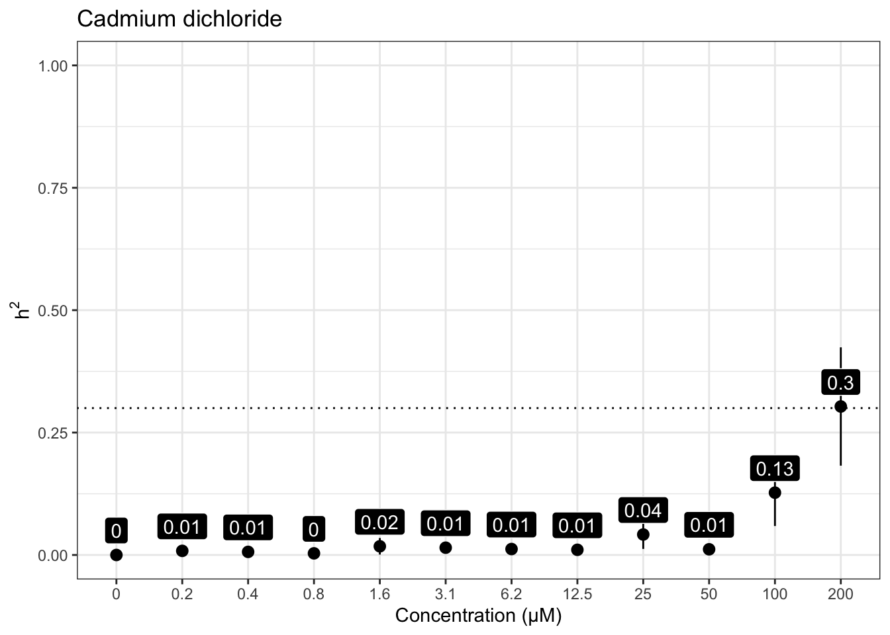

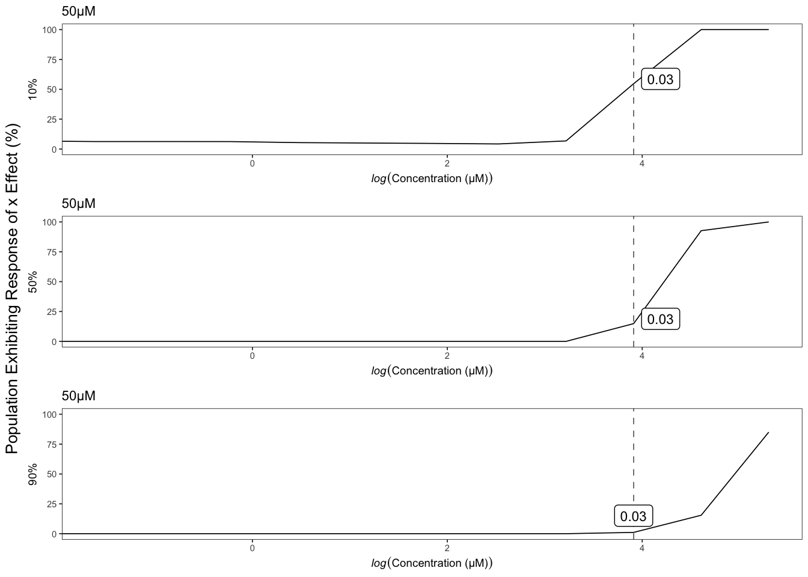
Copper (II) dichloride
Version out of date. Please update sommer to the newest version using:
install.packages('sommer') in a new session
Use the 'date.warning' argument to disable the warning message.iteration LogLik wall cpu(sec) restrained
1 -80.0137 20:4:24 0 0
2 -78.873 20:4:24 0 0
3 -78.1201 20:4:24 0 0
4 -78.0629 20:4:24 0 0
5 -78.0607 20:4:24 0 0
6 -78.0606 20:4:24 0 0
Version out of date. Please update sommer to the newest version using:
install.packages('sommer') in a new session
Use the 'date.warning' argument to disable the warning message.iteration LogLik wall cpu(sec) restrained
1 -125.053 20:4:32 0 0
2 -123.891 20:4:32 0 0
3 -122.974 20:4:32 0 0
4 -122.786 20:4:32 0 0
5 -122.785 20:4:32 0 0
Version out of date. Please update sommer to the newest version using:
install.packages('sommer') in a new session
Use the 'date.warning' argument to disable the warning message.iteration LogLik wall cpu(sec) restrained
1 -129.499 20:4:39 0 0
2 -128.209 20:4:39 0 0
3 -127.047 20:4:40 1 0
4 -126.685 20:4:40 1 0
5 -126.677 20:4:40 1 0
6 -126.677 20:4:40 1 0
Version out of date. Please update sommer to the newest version using:
install.packages('sommer') in a new session
Use the 'date.warning' argument to disable the warning message.iteration LogLik wall cpu(sec) restrained
1 -126.538 20:4:47 0 0
2 -125.409 20:4:47 0 0
3 -124.56 20:4:48 1 0
4 -124.403 20:4:48 1 0
5 -124.402 20:4:48 1 0
Version out of date. Please update sommer to the newest version using:
install.packages('sommer') in a new session
Use the 'date.warning' argument to disable the warning message.iteration LogLik wall cpu(sec) restrained
1 -120.42 20:4:55 0 0
2 -119.955 20:4:55 0 0
3 -119.719 20:4:55 0 0
4 -119.687 20:4:55 0 0
5 -119.687 20:4:55 0 0
Version out of date. Please update sommer to the newest version using:
install.packages('sommer') in a new session
Use the 'date.warning' argument to disable the warning message.iteration LogLik wall cpu(sec) restrained
1 -117.229 20:5:3 0 0
2 -116.794 20:5:3 0 0
3 -116.567 20:5:3 0 0
4 -116.532 20:5:3 0 0
5 -116.532 20:5:4 1 0
Version out of date. Please update sommer to the newest version using:
install.packages('sommer') in a new session
Use the 'date.warning' argument to disable the warning message.iteration LogLik wall cpu(sec) restrained
1 -43.2017 20:5:11 0 0
2 -43.1799 20:5:11 0 0
3 -43.1711 20:5:11 0 0
4 -43.1694 20:5:11 0 0
5 -43.1693 20:5:11 0 0
[1] "Only 1 Strain Sampled in Bootstrap - Skipping"
[1] "Only 1 Strain Sampled in Bootstrap - Skipping"
[1] "Only 1 Strain Sampled in Bootstrap - Skipping"
Version out of date. Please update sommer to the newest version using:
install.packages('sommer') in a new session
Use the 'date.warning' argument to disable the warning message.iteration LogLik wall cpu(sec) restrained
1 -124.735 20:5:19 0 0
2 -123.689 20:5:19 0 0
3 -122.895 20:5:19 0 0
4 -122.721 20:5:20 1 0
5 -122.72 20:5:20 1 0
6 -122.72 20:5:20 1 0
Version out of date. Please update sommer to the newest version using:
install.packages('sommer') in a new session
Use the 'date.warning' argument to disable the warning message.iteration LogLik wall cpu(sec) restrained
1 -121.197 20:5:27 0 0
2 -120.203 20:5:27 0 0
3 -119.467 20:5:27 0 0
4 -119.305 20:5:27 0 0
5 -119.302 20:5:27 0 0
6 -119.302 20:5:28 1 0
Version out of date. Please update sommer to the newest version using:
install.packages('sommer') in a new session
Use the 'date.warning' argument to disable the warning message.iteration LogLik wall cpu(sec) restrained
1 -129.631 20:5:35 0 0
2 -128.197 20:5:35 0 0
3 -126.913 20:5:35 0 0
4 -126.64 20:5:35 0 0
5 -126.64 20:5:36 1 0
Version out of date. Please update sommer to the newest version using:
install.packages('sommer') in a new session
Use the 'date.warning' argument to disable the warning message.iteration LogLik wall cpu(sec) restrained
1 -139.126 20:5:43 0 0
2 -136.656 20:5:43 0 0
3 -132.367 20:5:43 0 1
4 -130 20:5:43 0 1
5 -130 20:5:44 1 1
Version out of date. Please update sommer to the newest version using:
install.packages('sommer') in a new session
Use the 'date.warning' argument to disable the warning message.iteration LogLik wall cpu(sec) restrained
1 -127.368 20:5:51 0 0
2 -125.899 20:5:51 0 0
3 -124.618 20:5:51 0 0
4 -124.422 20:5:51 0 0
5 -124.417 20:5:51 0 0
6 -124.417 20:5:51 0 0
| Version | Author | Date |
|---|---|---|
| a8afd8b | sam-widmayer | 2021-06-01 |
| 8529055 | sam-widmayer | 2021-04-19 |
| bc5c5b5 | sam-widmayer | 2021-04-09 |
| 19f2802 | sam-widmayer | 2021-03-29 |
| a41a855 | sam-widmayer | 2021-03-25 |
| 0280cf4 | sam-widmayer | 2021-03-24 |
| 0e83f2b | sam-widmayer | 2021-03-24 |
| a451b2a | sam-widmayer | 2021-03-17 |
| 4bcbcdd | sam-widmayer | 2021-03-14 |
| cb6e132 | sam-widmayer | 2021-03-06 |


| Version | Author | Date |
|---|---|---|
| 7f8f7f0 | sam-widmayer | 2021-05-04 |
Nickel dichloride
Version out of date. Please update sommer to the newest version using:
install.packages('sommer') in a new session
Use the 'date.warning' argument to disable the warning message.iteration LogLik wall cpu(sec) restrained
1 -104.688 20:6:2 0 0
2 -102.204 20:6:2 0 0
3 -97.8879 20:6:2 0 1
4 -96.5 20:6:2 0 1
5 -96.5 20:6:2 0 1
Version out of date. Please update sommer to the newest version using:
install.packages('sommer') in a new session
Use the 'date.warning' argument to disable the warning message.iteration LogLik wall cpu(sec) restrained
1 -106.844 20:6:10 1 0
2 -104.51 20:6:10 1 0
3 -100.924 20:6:10 1 1
4 -99.5 20:6:10 1 1
5 -99.5 20:6:10 1 1
Version out of date. Please update sommer to the newest version using:
install.packages('sommer') in a new session
Use the 'date.warning' argument to disable the warning message.iteration LogLik wall cpu(sec) restrained
1 -108.535 20:6:17 0 0
2 -106.537 20:6:17 0 0
3 -104.008 20:6:17 0 0
4 -103.453 20:6:17 0 0
5 -103.297 20:6:17 0 0
6 -103.248 20:6:17 0 0
7 -103.224 20:6:17 0 0
8 -103.214 20:6:17 0 0
9 -103.21 20:6:17 0 0
10 -103.208 20:6:17 0 0
11 -103.207 20:6:17 0 0
Version out of date. Please update sommer to the newest version using:
install.packages('sommer') in a new session
Use the 'date.warning' argument to disable the warning message.iteration LogLik wall cpu(sec) restrained
1 -107.661 20:6:25 0 0
2 -106.024 20:6:25 0 0
3 -104.151 20:6:25 0 0
4 -102.88 20:6:25 0 1
5 -102.5 20:6:25 0 1
6 -102.5 20:6:25 0 1
Version out of date. Please update sommer to the newest version using:
install.packages('sommer') in a new session
Use the 'date.warning' argument to disable the warning message.iteration LogLik wall cpu(sec) restrained
1 -104.684 20:6:32 0 0
2 -103.497 20:6:32 0 0
3 -102.315 20:6:32 0 0
4 -101.576 20:6:32 0 0
5 -101.289 20:6:32 0 0
6 -101.139 20:6:32 0 0
7 -101.042 20:6:32 0 1
8 -101 20:6:33 1 1
9 -101 20:6:33 1 1
Version out of date. Please update sommer to the newest version using:
install.packages('sommer') in a new session
Use the 'date.warning' argument to disable the warning message.iteration LogLik wall cpu(sec) restrained
1 -102.987 20:6:39 0 0
2 -102.236 20:6:39 0 0
3 -101.659 20:6:39 0 0
4 -101.442 20:6:40 1 0
5 -101.41 20:6:40 1 0
6 -101.404 20:6:40 1 0
7 -101.404 20:6:40 1 0
Version out of date. Please update sommer to the newest version using:
install.packages('sommer') in a new session
Use the 'date.warning' argument to disable the warning message.iteration LogLik wall cpu(sec) restrained
1 -102.458 20:6:47 0 0
2 -101.261 20:6:47 0 0
3 -100.293 20:6:47 0 0
4 -100.062 20:6:47 0 0
5 -100.058 20:6:47 0 0
6 -100.058 20:6:47 0 0
Version out of date. Please update sommer to the newest version using:
install.packages('sommer') in a new session
Use the 'date.warning' argument to disable the warning message.iteration LogLik wall cpu(sec) restrained
1 -98.5748 20:6:54 0 0
2 -96.7764 20:6:54 0 0
3 -94.7545 20:6:54 0 0
4 -93.9631 20:6:54 0 0
5 -93.9519 20:6:54 0 0
6 -93.9518 20:6:54 0 0
Version out of date. Please update sommer to the newest version using:
install.packages('sommer') in a new session
Use the 'date.warning' argument to disable the warning message.iteration LogLik wall cpu(sec) restrained
1 -98.3541 20:7:1 0 0
2 -97.2899 20:7:1 0 0
3 -96.3691 20:7:2 1 0
4 -96.016 20:7:2 1 0
5 -95.9813 20:7:2 1 0
6 -95.9785 20:7:2 1 0
7 -95.9783 20:7:2 1 0
Version out of date. Please update sommer to the newest version using:
install.packages('sommer') in a new session
Use the 'date.warning' argument to disable the warning message.iteration LogLik wall cpu(sec) restrained
1 -97.3852 20:7:9 0 0
2 -96.2312 20:7:9 0 0
3 -95.3129 20:7:9 0 0
4 -95.0812 20:7:9 0 0
5 -95.0737 20:7:9 0 0
6 -95.0734 20:7:9 0 0
Version out of date. Please update sommer to the newest version using:
install.packages('sommer') in a new session
Use the 'date.warning' argument to disable the warning message.iteration LogLik wall cpu(sec) restrained
1 -44.7769 20:7:16 0 0
2 -43.1144 20:7:16 0 0
3 -42.8744 20:7:16 0 0
4 -42.8579 20:7:16 0 0
5 -42.8578 20:7:16 0 0
Version out of date. Please update sommer to the newest version using:
install.packages('sommer') in a new session
Use the 'date.warning' argument to disable the warning message.iteration LogLik wall cpu(sec) restrained
1 7.32736 20:7:23 0 0
2 14.6095 20:7:23 0 0
3 15.0177 20:7:23 0 0
4 15.0357 20:7:23 0 0
5 15.0358 20:7:23 0 0
[1] "Only 1 Strain Sampled in Bootstrap - Skipping"
[1] "Only 1 Strain Sampled in Bootstrap - Skipping"
[1] "Only 1 Strain Sampled in Bootstrap - Skipping"
[1] "Only 1 Strain Sampled in Bootstrap - Skipping"
| Version | Author | Date |
|---|---|---|
| a8afd8b | sam-widmayer | 2021-06-01 |
| 8529055 | sam-widmayer | 2021-04-19 |
| bc5c5b5 | sam-widmayer | 2021-04-09 |
| 19f2802 | sam-widmayer | 2021-03-29 |
| a41a855 | sam-widmayer | 2021-03-25 |
| 0280cf4 | sam-widmayer | 2021-03-24 |
| 0e83f2b | sam-widmayer | 2021-03-24 |
| a451b2a | sam-widmayer | 2021-03-17 |
| 4bcbcdd | sam-widmayer | 2021-03-14 |
| cb6e132 | sam-widmayer | 2021-03-06 |


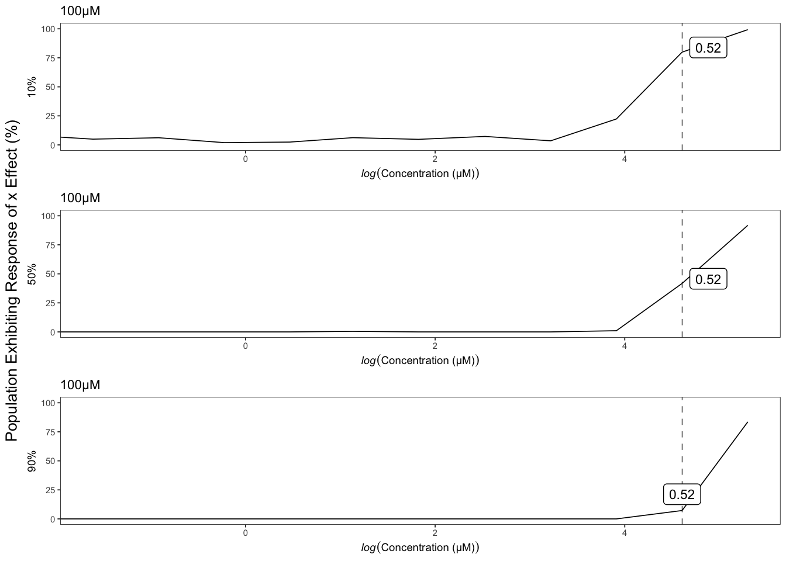
Paraquat
Version out of date. Please update sommer to the newest version using:
install.packages('sommer') in a new session
Use the 'date.warning' argument to disable the warning message.iteration LogLik wall cpu(sec) restrained
1 -94.3497 20:7:33 0 0
2 -91.8601 20:7:33 0 0
3 -87.5304 20:7:33 0 1
4 -86.5 20:7:33 0 1
5 -86.5 20:7:34 1 1
Version out of date. Please update sommer to the newest version using:
install.packages('sommer') in a new session
Use the 'date.warning' argument to disable the warning message.iteration LogLik wall cpu(sec) restrained
1 -76.9557 20:7:40 0 0
2 -76.5742 20:7:41 1 0
3 -76.4086 20:7:41 1 0
4 -76.3939 20:7:41 1 0
5 -76.3939 20:7:41 1 0
Version out of date. Please update sommer to the newest version using:
install.packages('sommer') in a new session
Use the 'date.warning' argument to disable the warning message.iteration LogLik wall cpu(sec) restrained
1 -84.4391 20:7:48 0 0
2 -83.8422 20:7:48 0 0
3 -83.542 20:7:48 0 0
4 -83.5123 20:7:48 0 0
5 -83.5123 20:7:48 0 0
Version out of date. Please update sommer to the newest version using:
install.packages('sommer') in a new session
Use the 'date.warning' argument to disable the warning message.iteration LogLik wall cpu(sec) restrained
1 -83.1453 20:7:55 0 0
2 -82.7354 20:7:55 0 0
3 -82.4883 20:7:55 0 0
4 -82.428 20:7:55 0 0
5 -82.4242 20:7:55 0 0
6 -82.424 20:7:55 0 0
Version out of date. Please update sommer to the newest version using:
install.packages('sommer') in a new session
Use the 'date.warning' argument to disable the warning message.iteration LogLik wall cpu(sec) restrained
1 -73.0264 20:8:1 0 0
2 -72.8093 20:8:1 0 0
3 -72.7288 20:8:1 0 0
4 -72.7227 20:8:1 0 0
5 -72.7227 20:8:1 0 0
Version out of date. Please update sommer to the newest version using:
install.packages('sommer') in a new session
Use the 'date.warning' argument to disable the warning message.iteration LogLik wall cpu(sec) restrained
1 -26.112 20:8:8 0 0
2 -23.2014 20:8:8 0 0
3 -22.899 20:8:8 0 0
4 -22.8821 20:8:8 0 0
5 -22.882 20:8:8 0 0
Version out of date. Please update sommer to the newest version using:
install.packages('sommer') in a new session
Use the 'date.warning' argument to disable the warning message.iteration LogLik wall cpu(sec) restrained
1 -25.6661 20:8:15 0 0
2 -20.5234 20:8:15 0 0
3 -19.9642 20:8:15 0 0
4 -19.9292 20:8:15 0 0
5 -19.9289 20:8:15 0 0
Version out of date. Please update sommer to the newest version using:
install.packages('sommer') in a new session
Use the 'date.warning' argument to disable the warning message.iteration LogLik wall cpu(sec) restrained
1 -38.8659 20:8:22 0 0
2 -37.0532 20:8:22 0 0
3 -36.8065 20:8:22 0 0
4 -36.7904 20:8:22 0 0
5 -36.7903 20:8:22 0 0
Version out of date. Please update sommer to the newest version using:
install.packages('sommer') in a new session
Use the 'date.warning' argument to disable the warning message.iteration LogLik wall cpu(sec) restrained
1 -21.5583 20:8:29 0 0
2 -17.3085 20:8:29 0 0
3 -16.7549 20:8:29 0 0
4 -16.7197 20:8:29 0 0
5 -16.7193 20:8:29 0 0
Version out of date. Please update sommer to the newest version using:
install.packages('sommer') in a new session
Use the 'date.warning' argument to disable the warning message.iteration LogLik wall cpu(sec) restrained
1 -13.259 20:8:35 0 0
2 -11.9935 20:8:35 0 0
3 -11.3294 20:8:35 0 0
4 -11.1991 20:8:35 0 0
5 -11.1927 20:8:35 0 0
6 -11.1924 20:8:35 0 0
[1] "Only 1 Strain Sampled in Bootstrap - Skipping"
[1] "Only 1 Strain Sampled in Bootstrap - Skipping"
[1] "Only 1 Strain Sampled in Bootstrap - Skipping"
[1] "Only 1 Strain Sampled in Bootstrap - Skipping"
[1] "Only 1 Strain Sampled in Bootstrap - Skipping"
[1] "Only 1 Strain Sampled in Bootstrap - Skipping"
[1] "Only 1 Strain Sampled in Bootstrap - Skipping"
[1] "Only 1 Strain Sampled in Bootstrap - Skipping"
[1] "Only 1 Strain Sampled in Bootstrap - Skipping"
[1] "Only 1 Strain Sampled in Bootstrap - Skipping"
[1] "Only 1 Strain Sampled in Bootstrap - Skipping"
[1] "Only 1 Strain Sampled in Bootstrap - Skipping"
[1] "Only 1 Strain Sampled in Bootstrap - Skipping"
[1] "Only 1 Strain Sampled in Bootstrap - Skipping"
[1] "Only 1 Strain Sampled in Bootstrap - Skipping"
[1] "Only 1 Strain Sampled in Bootstrap - Skipping"
[1] "Only 1 Strain Sampled in Bootstrap - Skipping"
[1] "Only 1 Strain Sampled in Bootstrap - Skipping"
[1] "Only 1 Strain Sampled in Bootstrap - Skipping"
[1] "Only 1 Strain Sampled in Bootstrap - Skipping"
[1] "Only 1 Strain Sampled in Bootstrap - Skipping"
[1] "Only 1 Strain Sampled in Bootstrap - Skipping"
[1] "Only 1 Strain Sampled in Bootstrap - Skipping"
[1] "Only 1 Strain Sampled in Bootstrap - Skipping"
[1] "Only 1 Strain Sampled in Bootstrap - Skipping"
[1] "Only 1 Strain Sampled in Bootstrap - Skipping"
[1] "Only 1 Strain Sampled in Bootstrap - Skipping"
[1] "Only 1 Strain Sampled in Bootstrap - Skipping"
[1] "Only 1 Strain Sampled in Bootstrap - Skipping"
[1] "Only 1 Strain Sampled in Bootstrap - Skipping"
[1] "Only 1 Strain Sampled in Bootstrap - Skipping"
[1] "Only 1 Strain Sampled in Bootstrap - Skipping"
[1] "Only 1 Strain Sampled in Bootstrap - Skipping"
[1] "Only 1 Strain Sampled in Bootstrap - Skipping"
[1] "Only 1 Strain Sampled in Bootstrap - Skipping"
[1] "Only 1 Strain Sampled in Bootstrap - Skipping"
[1] "Only 1 Strain Sampled in Bootstrap - Skipping"
[1] "Only 1 Strain Sampled in Bootstrap - Skipping"
[1] "Only 1 Strain Sampled in Bootstrap - Skipping"
[1] "Only 1 Strain Sampled in Bootstrap - Skipping"
[1] "Only 1 Strain Sampled in Bootstrap - Skipping"
[1] "Only 1 Strain Sampled in Bootstrap - Skipping"
[1] "Only 1 Strain Sampled in Bootstrap - Skipping"
[1] "Only 1 Strain Sampled in Bootstrap - Skipping"
[1] "Only 1 Strain Sampled in Bootstrap - Skipping"
[1] "Only 1 Strain Sampled in Bootstrap - Skipping"
[1] "Only 1 Strain Sampled in Bootstrap - Skipping"
[1] "Only 1 Strain Sampled in Bootstrap - Skipping"
[1] "Only 1 Strain Sampled in Bootstrap - Skipping"
[1] "Only 1 Strain Sampled in Bootstrap - Skipping"
[1] "Only 1 Strain Sampled in Bootstrap - Skipping"
[1] "Only 1 Strain Sampled in Bootstrap - Skipping"
[1] "Only 1 Strain Sampled in Bootstrap - Skipping"
[1] "Only 1 Strain Sampled in Bootstrap - Skipping"
[1] "Only 1 Strain Sampled in Bootstrap - Skipping"
[1] "Only 1 Strain Sampled in Bootstrap - Skipping"
[1] "Only 1 Strain Sampled in Bootstrap - Skipping"
[1] "Only 1 Strain Sampled in Bootstrap - Skipping"
[1] "Only 1 Strain Sampled in Bootstrap - Skipping"
[1] "Only 1 Strain Sampled in Bootstrap - Skipping"
[1] "Only 1 Strain Sampled in Bootstrap - Skipping"
[1] "Only 1 Strain Sampled in Bootstrap - Skipping"
[1] "Only 1 Strain Sampled in Bootstrap - Skipping"
[1] "Only 1 Strain Sampled in Bootstrap - Skipping"
[1] "Only 1 Strain Sampled in Bootstrap - Skipping"
[1] "Only 1 Strain Sampled in Bootstrap - Skipping"
[1] "Only 1 Strain Sampled in Bootstrap - Skipping"
[1] "Only 1 Strain Sampled in Bootstrap - Skipping"
[1] "Only 1 Strain Sampled in Bootstrap - Skipping"
[1] "Only 1 Strain Sampled in Bootstrap - Skipping"
[1] "Only 1 Strain Sampled in Bootstrap - Skipping"
[1] "Only 1 Strain Sampled in Bootstrap - Skipping"
[1] "Only 1 Strain Sampled in Bootstrap - Skipping"
[1] "Only 1 Strain Sampled in Bootstrap - Skipping"
[1] "Only 1 Strain Sampled in Bootstrap - Skipping"
[1] "Only 1 Strain Sampled in Bootstrap - Skipping"
[1] "Only 1 Strain Sampled in Bootstrap - Skipping"
[1] "Only 1 Strain Sampled in Bootstrap - Skipping"
[1] "Only 1 Strain Sampled in Bootstrap - Skipping"
[1] "Only 1 Strain Sampled in Bootstrap - Skipping"
[1] "Only 1 Strain Sampled in Bootstrap - Skipping"
[1] "Only 1 Strain Sampled in Bootstrap - Skipping"
[1] "Only 1 Strain Sampled in Bootstrap - Skipping"
[1] "Only 1 Strain Sampled in Bootstrap - Skipping"
[1] "Only 1 Strain Sampled in Bootstrap - Skipping"
[1] "Only 1 Strain Sampled in Bootstrap - Skipping"
[1] "Only 1 Strain Sampled in Bootstrap - Skipping"
[1] "Only 1 Strain Sampled in Bootstrap - Skipping"
[1] "Only 1 Strain Sampled in Bootstrap - Skipping"
[1] "Only 1 Strain Sampled in Bootstrap - Skipping"
[1] "Only 1 Strain Sampled in Bootstrap - Skipping"
[1] "Only 1 Strain Sampled in Bootstrap - Skipping"
[1] "Only 1 Strain Sampled in Bootstrap - Skipping"
[1] "Only 1 Strain Sampled in Bootstrap - Skipping"
[1] "Only 1 Strain Sampled in Bootstrap - Skipping"
[1] "Only 1 Strain Sampled in Bootstrap - Skipping"
[1] "Only 1 Strain Sampled in Bootstrap - Skipping"
Version out of date. Please update sommer to the newest version using:
install.packages('sommer') in a new session
Use the 'date.warning' argument to disable the warning message.iteration LogLik wall cpu(sec) restrained
1 -1.15402 20:8:40 0 0
2 8.79693 20:8:40 0 0
3 9.49022 20:8:40 0 0
4 9.52662 20:8:40 0 0
5 9.52689 20:8:40 0 0
Version out of date. Please update sommer to the newest version using:
install.packages('sommer') in a new session
Use the 'date.warning' argument to disable the warning message.iteration LogLik wall cpu(sec) restrained
1 -44.4096 20:8:47 0 0
2 -43.225 20:8:47 0 0
3 -43.0221 20:8:47 0 0
4 -43.0067 20:8:47 0 0
5 -43.0065 20:8:47 0 0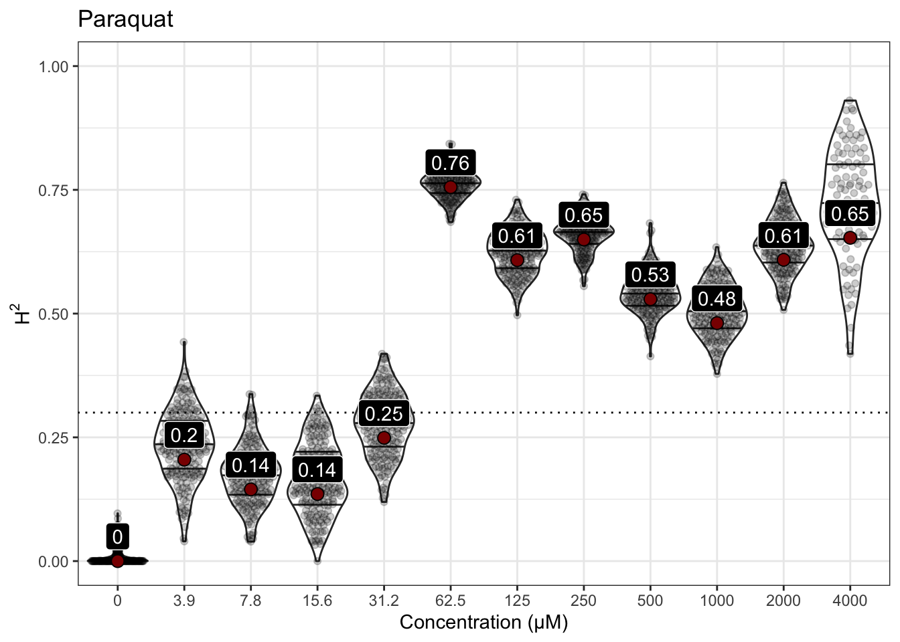
| Version | Author | Date |
|---|---|---|
| a8afd8b | sam-widmayer | 2021-06-01 |
| 8529055 | sam-widmayer | 2021-04-19 |
| bc5c5b5 | sam-widmayer | 2021-04-09 |
| 19f2802 | sam-widmayer | 2021-03-29 |
| a41a855 | sam-widmayer | 2021-03-25 |
| 0280cf4 | sam-widmayer | 2021-03-24 |
| 0e83f2b | sam-widmayer | 2021-03-24 |
| a451b2a | sam-widmayer | 2021-03-17 |
| 4bcbcdd | sam-widmayer | 2021-03-14 |
| cb6e132 | sam-widmayer | 2021-03-06 |


| Version | Author | Date |
|---|---|---|
| 7f8f7f0 | sam-widmayer | 2021-05-04 |
Zinc dichloride
Version out of date. Please update sommer to the newest version using:
install.packages('sommer') in a new session
Use the 'date.warning' argument to disable the warning message.iteration LogLik wall cpu(sec) restrained
1 -114.487 20:8:57 0 0
2 -112.009 20:8:57 0 0
3 -107.702 20:8:57 0 1
4 -106 20:8:57 0 1
5 -106 20:8:57 0 1
Version out of date. Please update sommer to the newest version using:
install.packages('sommer') in a new session
Use the 'date.warning' argument to disable the warning message.iteration LogLik wall cpu(sec) restrained
1 -109.647 20:9:4 0 0
2 -107.714 20:9:4 0 0
3 -105.44 20:9:4 0 0
4 -104.744 20:9:4 0 0
5 -104.73 20:9:4 0 0
6 -104.729 20:9:4 0 0
Version out of date. Please update sommer to the newest version using:
install.packages('sommer') in a new session
Use the 'date.warning' argument to disable the warning message.iteration LogLik wall cpu(sec) restrained
1 -109.206 20:9:11 0 0
2 -107.557 20:9:11 0 0
3 -105.835 20:9:11 0 0
4 -105.22 20:9:11 0 0
5 -105.202 20:9:11 0 0
6 -105.202 20:9:11 0 0
Version out of date. Please update sommer to the newest version using:
install.packages('sommer') in a new session
Use the 'date.warning' argument to disable the warning message.iteration LogLik wall cpu(sec) restrained
1 -109.966 20:9:18 0 0
2 -108.316 20:9:18 0 0
3 -106.638 20:9:18 0 0
4 -106.108 20:9:18 0 0
5 -106.098 20:9:18 0 0
6 -106.097 20:9:18 0 0
Version out of date. Please update sommer to the newest version using:
install.packages('sommer') in a new session
Use the 'date.warning' argument to disable the warning message.iteration LogLik wall cpu(sec) restrained
1 -113.254 20:9:25 0 0
2 -111.148 20:9:25 0 0
3 -108.327 20:9:25 0 1
4 -107 20:9:25 0 1
5 -107 20:9:25 0 1
Version out of date. Please update sommer to the newest version using:
install.packages('sommer') in a new session
Use the 'date.warning' argument to disable the warning message.iteration LogLik wall cpu(sec) restrained
1 -102.927 20:9:32 0 0
2 -101.831 20:9:32 0 0
3 -101.024 20:9:32 0 0
4 -100.874 20:9:32 0 0
5 -100.873 20:9:32 0 0
Version out of date. Please update sommer to the newest version using:
install.packages('sommer') in a new session
Use the 'date.warning' argument to disable the warning message.iteration LogLik wall cpu(sec) restrained
1 -107.87 20:9:39 0 0
2 -106.538 20:9:39 0 0
3 -105.318 20:9:39 0 0
4 -104.92 20:9:39 0 0
5 -104.904 20:9:39 0 0
6 -104.904 20:9:39 0 0
Version out of date. Please update sommer to the newest version using:
install.packages('sommer') in a new session
Use the 'date.warning' argument to disable the warning message.iteration LogLik wall cpu(sec) restrained
1 -99.6252 20:9:46 0 0
2 -98.7794 20:9:46 0 0
3 -98.2712 20:9:46 0 0
4 -98.2087 20:9:46 0 0
5 -98.2087 20:9:46 0 0
Version out of date. Please update sommer to the newest version using:
install.packages('sommer') in a new session
Use the 'date.warning' argument to disable the warning message.iteration LogLik wall cpu(sec) restrained
1 -86.2353 20:9:53 0 0
2 -86.1813 20:9:53 0 0
3 -86.1633 20:9:53 0 0
4 -86.1616 20:9:53 0 0
5 -86.1616 20:9:53 0 0
Version out of date. Please update sommer to the newest version using:
install.packages('sommer') in a new session
Use the 'date.warning' argument to disable the warning message.iteration LogLik wall cpu(sec) restrained
1 -98.654 20:10:0 0 0
2 -97.7809 20:10:0 0 0
3 -97.2576 20:10:0 0 0
4 -97.1998 20:10:0 0 0
5 -97.1998 20:10:0 0 0
Version out of date. Please update sommer to the newest version using:
install.packages('sommer') in a new session
Use the 'date.warning' argument to disable the warning message.iteration LogLik wall cpu(sec) restrained
1 -84.2069 20:10:7 0 0
2 -84.0894 20:10:7 0 0
3 -84.0475 20:10:7 0 0
4 -84.0438 20:10:7 0 0
5 -84.0438 20:10:7 0 0
Version out of date. Please update sommer to the newest version using:
install.packages('sommer') in a new session
Use the 'date.warning' argument to disable the warning message.iteration LogLik wall cpu(sec) restrained
1 -90.5991 20:10:13 0 0
2 -90.3663 20:10:13 0 0
3 -90.2536 20:10:14 1 0
4 -90.2347 20:10:14 1 0
5 -90.2341 20:10:14 1 0
| Version | Author | Date |
|---|---|---|
| a8afd8b | sam-widmayer | 2021-06-01 |
| 8529055 | sam-widmayer | 2021-04-19 |
| bc5c5b5 | sam-widmayer | 2021-04-09 |
| 19f2802 | sam-widmayer | 2021-03-29 |
| a41a855 | sam-widmayer | 2021-03-25 |
| 0280cf4 | sam-widmayer | 2021-03-24 |
| 0e83f2b | sam-widmayer | 2021-03-24 |
| a451b2a | sam-widmayer | 2021-03-17 |
| 4bcbcdd | sam-widmayer | 2021-03-14 |
| cb6e132 | sam-widmayer | 2021-03-06 |


| Version | Author | Date |
|---|---|---|
| 7f8f7f0 | sam-widmayer | 2021-05-04 |
Pyraclostrobin
Version out of date. Please update sommer to the newest version using:
install.packages('sommer') in a new session
Use the 'date.warning' argument to disable the warning message.iteration LogLik wall cpu(sec) restrained
1 -85.5278 20:10:23 0 0
2 -83.0302 20:10:23 0 0
3 -78.672 20:10:23 0 1
4 -78 20:10:23 0 1
5 -78 20:10:23 0 1
Version out of date. Please update sommer to the newest version using:
install.packages('sommer') in a new session
Use the 'date.warning' argument to disable the warning message.iteration LogLik wall cpu(sec) restrained
1 -76.6708 20:10:30 0 0
2 -76.0881 20:10:30 0 0
3 -75.6109 20:10:30 0 0
4 -75.3599 20:10:30 0 0
5 -75.2771 20:10:30 0 0
6 -75.2443 20:10:30 0 0
7 -75.23 20:10:30 0 0
8 -75.2233 20:10:30 0 0
9 -75.2201 20:10:30 0 0
10 -75.2186 20:10:30 0 0
11 -75.2178 20:10:30 0 0
Version out of date. Please update sommer to the newest version using:
install.packages('sommer') in a new session
Use the 'date.warning' argument to disable the warning message.iteration LogLik wall cpu(sec) restrained
1 -78.7043 20:10:37 0 0
2 -77.9909 20:10:37 0 0
3 -77.4457 20:10:37 0 0
4 -77.2297 20:10:37 0 0
5 -77.1895 20:10:37 0 0
6 -77.1808 20:10:37 0 0
7 -77.1788 20:10:37 0 0
8 -77.1783 20:10:37 0 0
Version out of date. Please update sommer to the newest version using:
install.packages('sommer') in a new session
Use the 'date.warning' argument to disable the warning message.iteration LogLik wall cpu(sec) restrained
1 -71.7129 20:10:44 0 0
2 -71.1471 20:10:44 0 0
3 -70.8241 20:10:44 0 0
4 -70.7709 20:10:44 0 0
5 -70.7702 20:10:44 0 0
Version out of date. Please update sommer to the newest version using:
install.packages('sommer') in a new session
Use the 'date.warning' argument to disable the warning message.iteration LogLik wall cpu(sec) restrained
1 -70.0366 20:10:51 0 0
2 -69.988 20:10:51 0 0
3 -69.9677 20:10:51 0 0
4 -69.9644 20:10:51 0 0
5 -69.9643 20:10:51 0 0
Version out of date. Please update sommer to the newest version using:
install.packages('sommer') in a new session
Use the 'date.warning' argument to disable the warning message.iteration LogLik wall cpu(sec) restrained
1 -56.1845 20:10:58 0 0
2 -56.0802 20:10:58 0 0
3 -56.0539 20:10:58 0 0
4 -56.0515 20:10:58 0 0
5 -56.0515 20:10:58 0 0
Version out of date. Please update sommer to the newest version using:
install.packages('sommer') in a new session
Use the 'date.warning' argument to disable the warning message.iteration LogLik wall cpu(sec) restrained
1 -39.8889 20:11:4 0 0
2 -39.2993 20:11:4 0 0
3 -39.2019 20:11:4 0 0
4 -39.1958 20:11:4 0 0
5 -39.1958 20:11:4 0 0
Version out of date. Please update sommer to the newest version using:
install.packages('sommer') in a new session
Use the 'date.warning' argument to disable the warning message.iteration LogLik wall cpu(sec) restrained
1 -30.263 20:11:11 0 0
2 -28.6698 20:11:11 0 0
3 -28.4518 20:11:11 0 0
4 -28.4381 20:11:11 0 0
5 -28.438 20:11:11 0 0
Version out of date. Please update sommer to the newest version using:
install.packages('sommer') in a new session
Use the 'date.warning' argument to disable the warning message.iteration LogLik wall cpu(sec) restrained
1 -33.5169 20:11:18 0 0
2 -32.1838 20:11:18 0 0
3 -31.9832 20:11:18 0 0
4 -31.9698 20:11:18 0 0
5 -31.9697 20:11:18 0 0
Version out of date. Please update sommer to the newest version using:
install.packages('sommer') in a new session
Use the 'date.warning' argument to disable the warning message.iteration LogLik wall cpu(sec) restrained
1 -33.5878 20:11:25 0 0
2 -32.1237 20:11:25 0 0
3 -31.8741 20:11:25 0 0
4 -31.855 20:11:25 0 0
5 -31.8548 20:11:25 0 0
Version out of date. Please update sommer to the newest version using:
install.packages('sommer') in a new session
Use the 'date.warning' argument to disable the warning message.iteration LogLik wall cpu(sec) restrained
1 -29.3041 20:11:31 0 0
2 -29.0886 20:11:31 0 0
3 -29.0328 20:11:31 0 0
4 -29.0271 20:11:31 0 0
5 -29.027 20:11:31 0 0
Version out of date. Please update sommer to the newest version using:
install.packages('sommer') in a new session
Use the 'date.warning' argument to disable the warning message.iteration LogLik wall cpu(sec) restrained
1 -30.0744 20:11:38 0 0
2 -29.3868 20:11:38 0 0
3 -29.2114 20:11:38 0 0
4 -29.1919 20:11:38 0 0
5 -29.1914 20:11:38 0 0
[1] "Only 1 Strain Sampled in Bootstrap - Skipping"
[1] "Only 1 Strain Sampled in Bootstrap - Skipping"
[1] "Only 1 Strain Sampled in Bootstrap - Skipping"
[1] "Only 1 Strain Sampled in Bootstrap - Skipping"
[1] "Only 1 Strain Sampled in Bootstrap - Skipping"
[1] "Only 1 Strain Sampled in Bootstrap - Skipping"
[1] "Only 1 Strain Sampled in Bootstrap - Skipping"
[1] "Only 1 Strain Sampled in Bootstrap - Skipping"
[1] "Only 1 Strain Sampled in Bootstrap - Skipping"
[1] "Only 1 Strain Sampled in Bootstrap - Skipping"
[1] "Only 1 Strain Sampled in Bootstrap - Skipping"
[1] "Only 1 Strain Sampled in Bootstrap - Skipping"
[1] "Only 1 Strain Sampled in Bootstrap - Skipping"
[1] "Only 1 Strain Sampled in Bootstrap - Skipping"
[1] "Only 1 Strain Sampled in Bootstrap - Skipping"
[1] "Only 1 Strain Sampled in Bootstrap - Skipping"
[1] "Only 1 Strain Sampled in Bootstrap - Skipping"
[1] "Only 1 Strain Sampled in Bootstrap - Skipping"
[1] "Only 1 Strain Sampled in Bootstrap - Skipping"
[1] "Only 1 Strain Sampled in Bootstrap - Skipping"
[1] "Only 1 Strain Sampled in Bootstrap - Skipping"
[1] "Only 1 Strain Sampled in Bootstrap - Skipping"
[1] "Only 1 Strain Sampled in Bootstrap - Skipping"
[1] "Only 1 Strain Sampled in Bootstrap - Skipping"
[1] "Only 1 Strain Sampled in Bootstrap - Skipping"
[1] "Only 1 Strain Sampled in Bootstrap - Skipping"
[1] "Only 1 Strain Sampled in Bootstrap - Skipping"
[1] "Only 1 Strain Sampled in Bootstrap - Skipping"
[1] "Only 1 Strain Sampled in Bootstrap - Skipping"
[1] "Only 1 Strain Sampled in Bootstrap - Skipping"
[1] "Only 1 Strain Sampled in Bootstrap - Skipping"
[1] "Only 1 Strain Sampled in Bootstrap - Skipping"
[1] "Only 1 Strain Sampled in Bootstrap - Skipping"
[1] "Only 1 Strain Sampled in Bootstrap - Skipping"
[1] "Only 1 Strain Sampled in Bootstrap - Skipping"
[1] "Only 1 Strain Sampled in Bootstrap - Skipping"
[1] "Only 1 Strain Sampled in Bootstrap - Skipping"
[1] "Only 1 Strain Sampled in Bootstrap - Skipping"
[1] "Only 1 Strain Sampled in Bootstrap - Skipping"
[1] "Only 1 Strain Sampled in Bootstrap - Skipping"
[1] "Only 1 Strain Sampled in Bootstrap - Skipping"
[1] "Only 1 Strain Sampled in Bootstrap - Skipping"
| Version | Author | Date |
|---|---|---|
| a8afd8b | sam-widmayer | 2021-06-01 |
| 8529055 | sam-widmayer | 2021-04-19 |
| bc5c5b5 | sam-widmayer | 2021-04-09 |
| 19f2802 | sam-widmayer | 2021-03-29 |
| a41a855 | sam-widmayer | 2021-03-25 |
| 0280cf4 | sam-widmayer | 2021-03-24 |
| 0e83f2b | sam-widmayer | 2021-03-24 |
| a451b2a | sam-widmayer | 2021-03-17 |
| 4bcbcdd | sam-widmayer | 2021-03-14 |
| cb6e132 | sam-widmayer | 2021-03-06 |


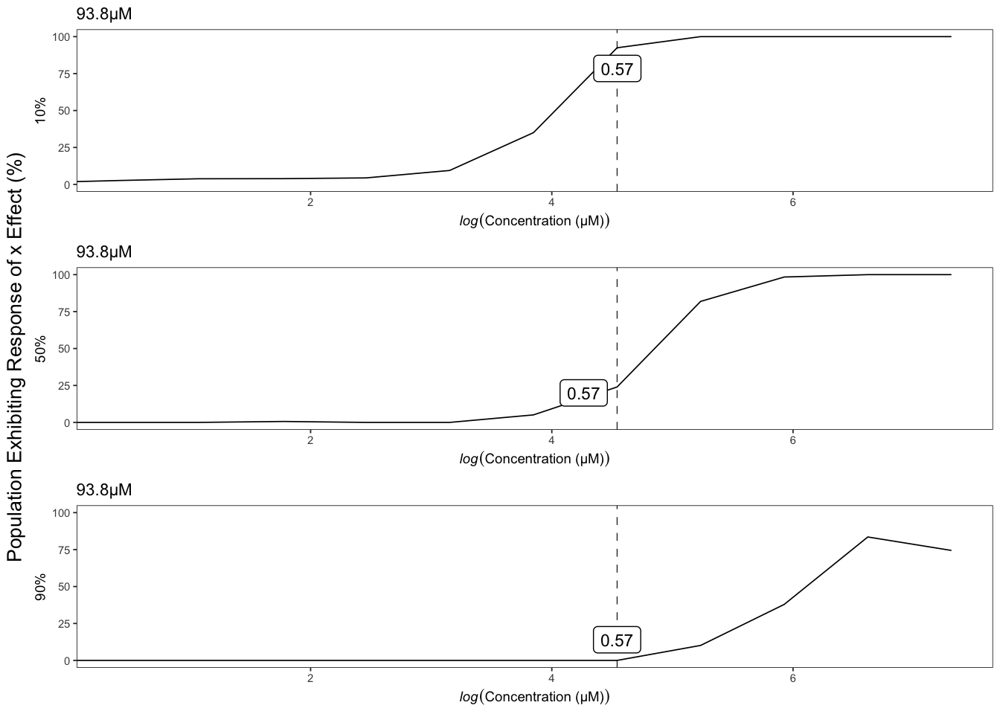
Aldicarb
Version out of date. Please update sommer to the newest version using:
install.packages('sommer') in a new session
Use the 'date.warning' argument to disable the warning message.iteration LogLik wall cpu(sec) restrained
1 -171.331 20:11:47 0 0
2 -168.869 20:11:47 0 0
3 -164.596 20:11:47 0 1
4 -161.5 20:11:47 0 1
5 -161.5 20:11:47 0 1
Version out of date. Please update sommer to the newest version using:
install.packages('sommer') in a new session
Use the 'date.warning' argument to disable the warning message.iteration LogLik wall cpu(sec) restrained
1 -163.459 20:11:54 0 0
2 -162.034 20:11:54 0 0
3 -160.717 20:11:54 0 0
4 -160.321 20:11:55 1 0
5 -160.309 20:11:55 1 0
6 -160.308 20:11:55 1 0
Version out of date. Please update sommer to the newest version using:
install.packages('sommer') in a new session
Use the 'date.warning' argument to disable the warning message.iteration LogLik wall cpu(sec) restrained
1 -159.464 20:12:2 0 0
2 -158.565 20:12:2 0 0
3 -157.918 20:12:2 0 0
4 -157.764 20:12:2 0 0
5 -157.759 20:12:2 0 0
6 -157.759 20:12:2 0 0
Version out of date. Please update sommer to the newest version using:
install.packages('sommer') in a new session
Use the 'date.warning' argument to disable the warning message.iteration LogLik wall cpu(sec) restrained
1 -168.909 20:12:10 0 0
2 -167.016 20:12:10 0 0
3 -164.703 20:12:10 0 0
4 -163.469 20:12:10 0 0
5 -163.382 20:12:10 0 0
6 -163.375 20:12:10 0 0
7 -163.375 20:12:10 0 0
Version out of date. Please update sommer to the newest version using:
install.packages('sommer') in a new session
Use the 'date.warning' argument to disable the warning message.iteration LogLik wall cpu(sec) restrained
1 -169.804 20:12:17 0 0
2 -167.859 20:12:17 0 0
3 -165.407 20:12:18 1 0
4 -164.054 20:12:18 1 0
5 -163.978 20:12:18 1 0
6 -163.969 20:12:18 1 0
7 -163.968 20:12:18 1 0
8 -163.968 20:12:18 1 0
Version out of date. Please update sommer to the newest version using:
install.packages('sommer') in a new session
Use the 'date.warning' argument to disable the warning message.iteration LogLik wall cpu(sec) restrained
1 -154.835 20:12:26 1 0
2 -154.294 20:12:26 1 0
3 -153.971 20:12:26 1 0
4 -153.906 20:12:26 1 0
5 -153.903 20:12:26 1 0
6 -153.903 20:12:27 2 0
Version out of date. Please update sommer to the newest version using:
install.packages('sommer') in a new session
Use the 'date.warning' argument to disable the warning message.iteration LogLik wall cpu(sec) restrained
1 -101.786 20:12:34 1 0
2 -101.73 20:12:34 1 0
3 -101.716 20:12:34 1 0
4 -101.715 20:12:34 1 0
5 -101.715 20:12:34 1 0
Version out of date. Please update sommer to the newest version using:
install.packages('sommer') in a new session
Use the 'date.warning' argument to disable the warning message.iteration LogLik wall cpu(sec) restrained
1 -116.999 20:12:41 0 0
2 -116.947 20:12:41 0 0
3 -116.928 20:12:41 0 0
4 -116.925 20:12:41 0 0
5 -116.925 20:12:41 0 0
Version out of date. Please update sommer to the newest version using:
install.packages('sommer') in a new session
Use the 'date.warning' argument to disable the warning message.iteration LogLik wall cpu(sec) restrained
1 -103.515 20:12:48 0 0
2 -103.241 20:12:48 0 0
3 -103.104 20:12:48 0 0
4 -103.08 20:12:48 0 0
5 -103.079 20:12:48 0 0
Version out of date. Please update sommer to the newest version using:
install.packages('sommer') in a new session
Use the 'date.warning' argument to disable the warning message.iteration LogLik wall cpu(sec) restrained
1 -46.8238 20:12:55 0 0
2 -46.8004 20:12:55 0 0
3 -46.7909 20:12:55 0 0
4 -46.7891 20:12:55 0 0
5 -46.789 20:12:55 0 0
[1] "Only 1 Strain Sampled in Bootstrap - Skipping"
[1] "Only 1 Strain Sampled in Bootstrap - Skipping"
[1] "Only 1 Strain Sampled in Bootstrap - Skipping"
[1] "Only 1 Strain Sampled in Bootstrap - Skipping"
[1] "Only 1 Strain Sampled in Bootstrap - Skipping"
[1] "Only 1 Strain Sampled in Bootstrap - Skipping"
[1] "Only 1 Strain Sampled in Bootstrap - Skipping"
[1] "Only 1 Strain Sampled in Bootstrap - Skipping"
[1] "Only 1 Strain Sampled in Bootstrap - Skipping"
[1] "Only 1 Strain Sampled in Bootstrap - Skipping"
[1] "Only 1 Strain Sampled in Bootstrap - Skipping"
[1] "Only 1 Strain Sampled in Bootstrap - Skipping"
[1] "Only 1 Strain Sampled in Bootstrap - Skipping"
[1] "Only 1 Strain Sampled in Bootstrap - Skipping"
[1] "Only 1 Strain Sampled in Bootstrap - Skipping"
[1] "Only 1 Strain Sampled in Bootstrap - Skipping"
[1] "Only 1 Strain Sampled in Bootstrap - Skipping"
[1] "Only 1 Strain Sampled in Bootstrap - Skipping"
[1] "Only 1 Strain Sampled in Bootstrap - Skipping"
[1] "Only 1 Strain Sampled in Bootstrap - Skipping"
[1] "Only 1 Strain Sampled in Bootstrap - Skipping"
| Version | Author | Date |
|---|---|---|
| a8afd8b | sam-widmayer | 2021-06-01 |
| 8529055 | sam-widmayer | 2021-04-19 |
| bc5c5b5 | sam-widmayer | 2021-04-09 |
| 19f2802 | sam-widmayer | 2021-03-29 |
| a41a855 | sam-widmayer | 2021-03-25 |
| 0280cf4 | sam-widmayer | 2021-03-24 |
| 0e83f2b | sam-widmayer | 2021-03-24 |
| a451b2a | sam-widmayer | 2021-03-17 |
| 4bcbcdd | sam-widmayer | 2021-03-14 |
| cb6e132 | sam-widmayer | 2021-03-06 |

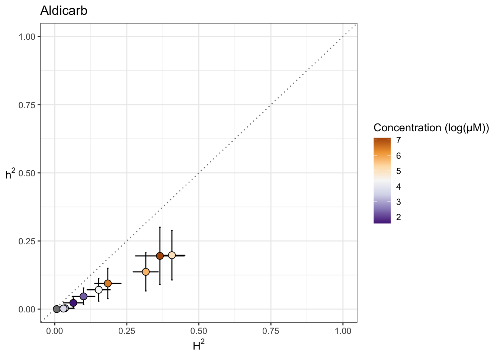

| Version | Author | Date |
|---|---|---|
| 7f8f7f0 | sam-widmayer | 2021-05-04 |
Chlorfenapyr
Version out of date. Please update sommer to the newest version using:
install.packages('sommer') in a new session
Use the 'date.warning' argument to disable the warning message.iteration LogLik wall cpu(sec) restrained
1 -537.761 20:13:8 3 0
2 -535.323 20:13:12 7 0
3 -531.092 20:13:15 10 1
4 -524 20:13:19 14 1
5 -524 20:13:22 17 1
Version out of date. Please update sommer to the newest version using:
install.packages('sommer') in a new session
Use the 'date.warning' argument to disable the warning message.iteration LogLik wall cpu(sec) restrained
1 -124.229 20:13:30 0 0
2 -123.522 20:13:30 0 0
3 -123.032 20:13:30 0 0
4 -122.897 20:13:30 0 0
5 -122.887 20:13:30 0 0
6 -122.886 20:13:30 0 0
Version out of date. Please update sommer to the newest version using:
install.packages('sommer') in a new session
Use the 'date.warning' argument to disable the warning message.iteration LogLik wall cpu(sec) restrained
1 -96.3252 20:13:37 0 0
2 -96.2289 20:13:37 0 0
3 -96.2026 20:13:37 0 0
4 -96.1998 20:13:37 0 0
5 -96.1998 20:13:37 0 0
Version out of date. Please update sommer to the newest version using:
install.packages('sommer') in a new session
Use the 'date.warning' argument to disable the warning message.iteration LogLik wall cpu(sec) restrained
1 -17.123 20:13:44 0 0
2 -11.792 20:13:44 0 0
3 -11.2457 20:13:44 0 0
4 -11.2109 20:13:44 0 0
5 -11.2106 20:13:44 0 0
Version out of date. Please update sommer to the newest version using:
install.packages('sommer') in a new session
Use the 'date.warning' argument to disable the warning message.iteration LogLik wall cpu(sec) restrained
1 41.182 20:13:52 0 0
2 49.4279 20:13:52 0 0
3 49.9663 20:13:52 0 0
4 49.9953 20:13:52 0 0
5 49.9955 20:13:52 0 0
Version out of date. Please update sommer to the newest version using:
install.packages('sommer') in a new session
Use the 'date.warning' argument to disable the warning message.iteration LogLik wall cpu(sec) restrained
1 -27.875 20:13:59 0 0
2 -26.0834 20:13:59 0 0
3 -24.6838 20:13:59 0 0
4 -24.1906 20:13:59 0 0
5 -24.1332 20:13:59 0 0
6 -24.1282 20:13:59 0 0
7 -24.1278 20:13:59 0 0
[1] "Only 1 Strain Sampled in Bootstrap - Skipping"
[1] "Only 1 Strain Sampled in Bootstrap - Skipping"
[1] "Only 1 Strain Sampled in Bootstrap - Skipping"
[1] "Only 1 Strain Sampled in Bootstrap - Skipping"
[1] "Only 1 Strain Sampled in Bootstrap - Skipping"
[1] "Only 1 Strain Sampled in Bootstrap - Skipping"
[1] "Only 1 Strain Sampled in Bootstrap - Skipping"
[1] "Only 1 Strain Sampled in Bootstrap - Skipping"
[1] "Only 1 Strain Sampled in Bootstrap - Skipping"
[1] "Only 1 Strain Sampled in Bootstrap - Skipping"
[1] "Only 1 Strain Sampled in Bootstrap - Skipping"
[1] "Only 1 Strain Sampled in Bootstrap - Skipping"
[1] "Only 1 Strain Sampled in Bootstrap - Skipping"
[1] "Only 1 Strain Sampled in Bootstrap - Skipping"
[1] "Only 1 Strain Sampled in Bootstrap - Skipping"
[1] "Only 1 Strain Sampled in Bootstrap - Skipping"
[1] "Only 1 Strain Sampled in Bootstrap - Skipping"
[1] "Only 1 Strain Sampled in Bootstrap - Skipping"
[1] "Only 1 Strain Sampled in Bootstrap - Skipping"
[1] "Only 1 Strain Sampled in Bootstrap - Skipping"
[1] "Only 1 Strain Sampled in Bootstrap - Skipping"
[1] "Only 1 Strain Sampled in Bootstrap - Skipping"
[1] "Only 1 Strain Sampled in Bootstrap - Skipping"
[1] "Only 1 Strain Sampled in Bootstrap - Skipping"
[1] "Only 1 Strain Sampled in Bootstrap - Skipping"
[1] "Only 1 Strain Sampled in Bootstrap - Skipping"
[1] "Only 1 Strain Sampled in Bootstrap - Skipping"
[1] "Only 1 Strain Sampled in Bootstrap - Skipping"
[1] "Only 1 Strain Sampled in Bootstrap - Skipping"
[1] "Only 1 Strain Sampled in Bootstrap - Skipping"
[1] "Only 1 Strain Sampled in Bootstrap - Skipping"
[1] "Only 1 Strain Sampled in Bootstrap - Skipping"
[1] "Only 1 Strain Sampled in Bootstrap - Skipping"
[1] "Only 1 Strain Sampled in Bootstrap - Skipping"
[1] "Only 1 Strain Sampled in Bootstrap - Skipping"
[1] "Only 1 Strain Sampled in Bootstrap - Skipping"
[1] "Only 1 Strain Sampled in Bootstrap - Skipping"
[1] "Only 1 Strain Sampled in Bootstrap - Skipping"
[1] "Only 1 Strain Sampled in Bootstrap - Skipping"
[1] "Only 1 Strain Sampled in Bootstrap - Skipping"
[1] "Only 1 Strain Sampled in Bootstrap - Skipping"
[1] "Only 1 Strain Sampled in Bootstrap - Skipping"
[1] "Only 1 Strain Sampled in Bootstrap - Skipping"
[1] "Only 1 Strain Sampled in Bootstrap - Skipping"
[1] "Only 1 Strain Sampled in Bootstrap - Skipping"
[1] "Only 1 Strain Sampled in Bootstrap - Skipping"
[1] "Only 1 Strain Sampled in Bootstrap - Skipping"
[1] "Only 1 Strain Sampled in Bootstrap - Skipping"
[1] "Only 1 Strain Sampled in Bootstrap - Skipping"
[1] "Only 1 Strain Sampled in Bootstrap - Skipping"
[1] "Only 1 Strain Sampled in Bootstrap - Skipping"
[1] "Only 1 Strain Sampled in Bootstrap - Skipping"
[1] "Only 1 Strain Sampled in Bootstrap - Skipping"
[1] "Only 1 Strain Sampled in Bootstrap - Skipping"
[1] "Only 1 Strain Sampled in Bootstrap - Skipping"
[1] "Only 1 Strain Sampled in Bootstrap - Skipping"
[1] "Only 1 Strain Sampled in Bootstrap - Skipping"
[1] "Only 1 Strain Sampled in Bootstrap - Skipping"
[1] "Only 1 Strain Sampled in Bootstrap - Skipping"
[1] "Only 1 Strain Sampled in Bootstrap - Skipping"
[1] "Only 1 Strain Sampled in Bootstrap - Skipping"
[1] "Only 1 Strain Sampled in Bootstrap - Skipping"
[1] "Only 1 Strain Sampled in Bootstrap - Skipping"
[1] "Only 1 Strain Sampled in Bootstrap - Skipping"
[1] "Only 1 Strain Sampled in Bootstrap - Skipping"
[1] "Only 1 Strain Sampled in Bootstrap - Skipping"
[1] "Only 1 Strain Sampled in Bootstrap - Skipping"
[1] "Only 1 Strain Sampled in Bootstrap - Skipping"
[1] "Only 1 Strain Sampled in Bootstrap - Skipping"
[1] "Only 1 Strain Sampled in Bootstrap - Skipping"
[1] "Only 1 Strain Sampled in Bootstrap - Skipping"
[1] "Only 1 Strain Sampled in Bootstrap - Skipping"
[1] "Only 1 Strain Sampled in Bootstrap - Skipping"
[1] "Only 1 Strain Sampled in Bootstrap - Skipping"
[1] "Only 1 Strain Sampled in Bootstrap - Skipping"
[1] "Only 1 Strain Sampled in Bootstrap - Skipping"
[1] "Only 1 Strain Sampled in Bootstrap - Skipping"
[1] "Only 1 Strain Sampled in Bootstrap - Skipping"
[1] "Only 1 Strain Sampled in Bootstrap - Skipping"
[1] "Only 1 Strain Sampled in Bootstrap - Skipping"
[1] "Only 1 Strain Sampled in Bootstrap - Skipping"
[1] "Only 1 Strain Sampled in Bootstrap - Skipping"
[1] "Only 1 Strain Sampled in Bootstrap - Skipping"
[1] "Only 1 Strain Sampled in Bootstrap - Skipping"
[1] "Only 1 Strain Sampled in Bootstrap - Skipping"
[1] "Only 1 Strain Sampled in Bootstrap - Skipping"
[1] "Only 1 Strain Sampled in Bootstrap - Skipping"
[1] "Only 1 Strain Sampled in Bootstrap - Skipping"
[1] "Only 1 Strain Sampled in Bootstrap - Skipping"
[1] "Only 1 Strain Sampled in Bootstrap - Skipping"
[1] "Only 1 Strain Sampled in Bootstrap - Skipping"
[1] "Only 1 Strain Sampled in Bootstrap - Skipping"
[1] "Only 1 Strain Sampled in Bootstrap - Skipping"
[1] "Only 1 Strain Sampled in Bootstrap - Skipping"
[1] "Only 1 Strain Sampled in Bootstrap - Skipping"
[1] "Only 1 Strain Sampled in Bootstrap - Skipping"
[1] "Only 1 Strain Sampled in Bootstrap - Skipping"
[1] "Only 1 Strain Sampled in Bootstrap - Skipping"
[1] "Only 1 Strain Sampled in Bootstrap - Skipping"
[1] "Only 1 Strain Sampled in Bootstrap - Skipping"
[1] "Only 1 Strain Sampled in Bootstrap - Skipping"
| Version | Author | Date |
|---|---|---|
| a8afd8b | sam-widmayer | 2021-06-01 |
| 8529055 | sam-widmayer | 2021-04-19 |
| bc5c5b5 | sam-widmayer | 2021-04-09 |
| 19f2802 | sam-widmayer | 2021-03-29 |
| a41a855 | sam-widmayer | 2021-03-25 |
| 0280cf4 | sam-widmayer | 2021-03-24 |
| 0e83f2b | sam-widmayer | 2021-03-24 |
| a451b2a | sam-widmayer | 2021-03-17 |
| 4bcbcdd | sam-widmayer | 2021-03-14 |
| cb6e132 | sam-widmayer | 2021-03-06 |
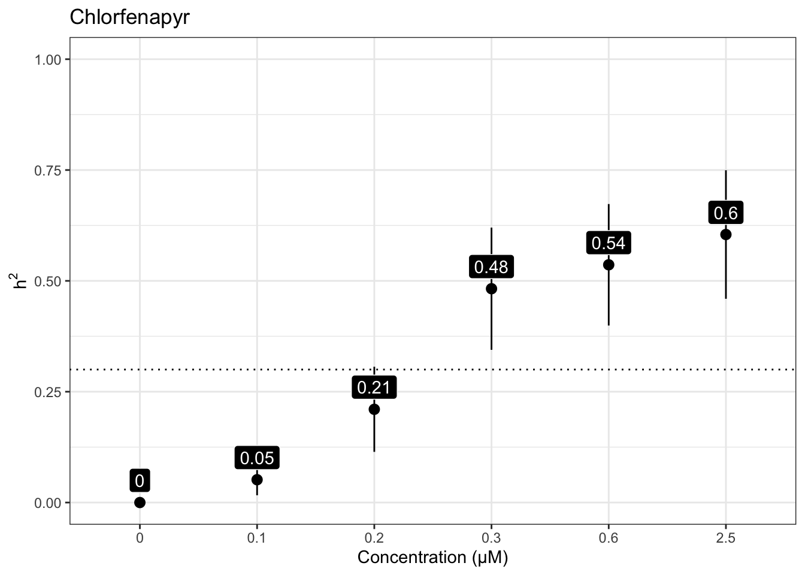


Methomyl
Version out of date. Please update sommer to the newest version using:
install.packages('sommer') in a new session
Use the 'date.warning' argument to disable the warning message.iteration LogLik wall cpu(sec) restrained
1 -106.236 20:14:6 0 0
2 -103.752 20:14:6 0 0
3 -99.4328 20:14:6 0 1
4 -98 20:14:6 0 1
5 -98 20:14:6 0 1
Version out of date. Please update sommer to the newest version using:
install.packages('sommer') in a new session
Use the 'date.warning' argument to disable the warning message.iteration LogLik wall cpu(sec) restrained
1 -103.868 20:14:13 0 0
2 -102.033 20:14:13 0 0
3 -99.8914 20:14:13 0 0
4 -98.9664 20:14:13 0 0
5 -98.9592 20:14:13 0 0
6 -98.9592 20:14:13 0 0
Version out of date. Please update sommer to the newest version using:
install.packages('sommer') in a new session
Use the 'date.warning' argument to disable the warning message.iteration LogLik wall cpu(sec) restrained
1 -106.807 20:14:20 0 0
2 -104.808 20:14:20 0 0
3 -102.313 20:14:20 0 1
4 -101 20:14:20 0 1
5 -101 20:14:20 0 1
Version out of date. Please update sommer to the newest version using:
install.packages('sommer') in a new session
Use the 'date.warning' argument to disable the warning message.iteration LogLik wall cpu(sec) restrained
1 -106.71 20:14:27 0 0
2 -104.934 20:14:27 0 0
3 -102.767 20:14:27 0 0
4 -101.126 20:14:27 0 1
5 -101 20:14:27 0 1
6 -101 20:14:27 0 1
Version out of date. Please update sommer to the newest version using:
install.packages('sommer') in a new session
Use the 'date.warning' argument to disable the warning message.iteration LogLik wall cpu(sec) restrained
1 -100.266 20:14:34 0 0
2 -99.6138 20:14:34 0 0
3 -99.1984 20:14:34 0 0
4 -99.1055 20:14:34 0 0
5 -99.1014 20:14:34 0 0
6 -99.1012 20:14:34 0 0
Version out of date. Please update sommer to the newest version using:
install.packages('sommer') in a new session
Use the 'date.warning' argument to disable the warning message.iteration LogLik wall cpu(sec) restrained
1 -100.977 20:14:41 0 0
2 -99.5287 20:14:41 0 0
3 -98.1015 20:14:41 0 0
4 -97.5303 20:14:41 0 0
5 -97.4936 20:14:41 0 0
6 -97.4922 20:14:41 0 0
7 -97.4921 20:14:41 0 0
Version out of date. Please update sommer to the newest version using:
install.packages('sommer') in a new session
Use the 'date.warning' argument to disable the warning message.iteration LogLik wall cpu(sec) restrained
1 -84.3431 20:14:48 0 0
2 -84.2993 20:14:48 0 0
3 -84.2835 20:14:48 0 0
4 -84.281 20:14:48 0 0
5 -84.2808 20:14:48 0 0
Version out of date. Please update sommer to the newest version using:
install.packages('sommer') in a new session
Use the 'date.warning' argument to disable the warning message.iteration LogLik wall cpu(sec) restrained
1 -51.345 20:14:55 0 0
2 -46.9596 20:14:55 0 0
3 -46.2892 20:14:55 0 0
4 -46.2375 20:14:55 0 0
5 -46.2367 20:14:55 0 0
Version out of date. Please update sommer to the newest version using:
install.packages('sommer') in a new session
Use the 'date.warning' argument to disable the warning message.iteration LogLik wall cpu(sec) restrained
1 -35.9653 20:15:2 0 0
2 -34.1315 20:15:2 0 0
3 -33.7275 20:15:2 0 0
4 -33.6868 20:15:2 0 0
5 -33.6859 20:15:2 0 0
[1] "Only 1 Strain Sampled in Bootstrap - Skipping"
[1] "Only 1 Strain Sampled in Bootstrap - Skipping"
Version out of date. Please update sommer to the newest version using:
install.packages('sommer') in a new session
Use the 'date.warning' argument to disable the warning message.iteration LogLik wall cpu(sec) restrained
1 -98.3204 20:15:9 0 0
2 -96.7758 20:15:9 0 0
3 -95.3 20:15:9 0 0
4 -94.8851 20:15:9 0 0
5 -94.8798 20:15:9 0 0
6 -94.8797 20:15:9 0 0
| Version | Author | Date |
|---|---|---|
| a8afd8b | sam-widmayer | 2021-06-01 |
| 8529055 | sam-widmayer | 2021-04-19 |
| bc5c5b5 | sam-widmayer | 2021-04-09 |
| 19f2802 | sam-widmayer | 2021-03-29 |
| a41a855 | sam-widmayer | 2021-03-25 |
| 0280cf4 | sam-widmayer | 2021-03-24 |
| 0e83f2b | sam-widmayer | 2021-03-24 |
| a451b2a | sam-widmayer | 2021-03-17 |
| 4bcbcdd | sam-widmayer | 2021-03-14 |
| cb6e132 | sam-widmayer | 2021-03-06 |

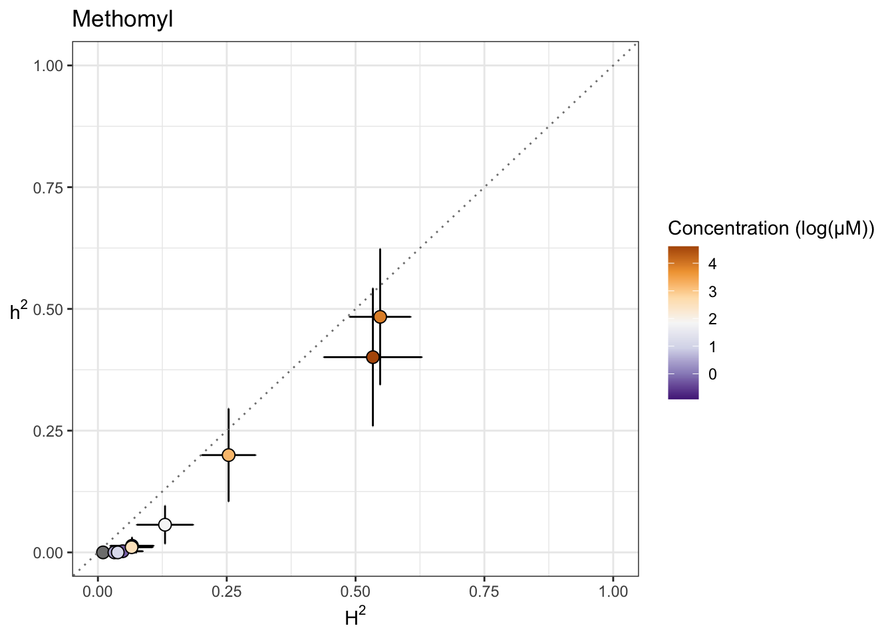

| Version | Author | Date |
|---|---|---|
| 7f8f7f0 | sam-widmayer | 2021-05-04 |
Methylmercury dichloride
Version out of date. Please update sommer to the newest version using:
install.packages('sommer') in a new session
Use the 'date.warning' argument to disable the warning message.iteration LogLik wall cpu(sec) restrained
1 -126.82 20:15:20 0 0
2 -124.346 20:15:20 0 0
3 -120.047 20:15:20 0 1
4 -118 20:15:20 0 1
5 -118 20:15:20 0 1
Version out of date. Please update sommer to the newest version using:
install.packages('sommer') in a new session
Use the 'date.warning' argument to disable the warning message.iteration LogLik wall cpu(sec) restrained
1 -120.529 20:15:28 0 0
2 -118.876 20:15:28 0 0
3 -117.039 20:15:28 0 0
4 -116.289 20:15:28 0 0
5 -116.289 20:15:28 0 0
Version out of date. Please update sommer to the newest version using:
install.packages('sommer') in a new session
Use the 'date.warning' argument to disable the warning message.iteration LogLik wall cpu(sec) restrained
1 -122.465 20:15:35 0 0
2 -120.53 20:15:35 0 0
3 -118.247 20:15:35 0 0
4 -117.532 20:15:35 0 0
5 -117.523 20:15:35 0 0
6 -117.523 20:15:35 0 0
Version out of date. Please update sommer to the newest version using:
install.packages('sommer') in a new session
Use the 'date.warning' argument to disable the warning message.iteration LogLik wall cpu(sec) restrained
1 -118.78 20:15:42 0 0
2 -116.804 20:15:42 0 0
3 -114.44 20:15:42 0 0
4 -113.998 20:15:42 0 0
5 -113.911 20:15:42 0 0
6 -113.885 20:15:42 0 0
7 -113.877 20:15:42 0 0
8 -113.875 20:15:42 0 0
9 -113.874 20:15:42 0 0
Version out of date. Please update sommer to the newest version using:
install.packages('sommer') in a new session
Use the 'date.warning' argument to disable the warning message.iteration LogLik wall cpu(sec) restrained
1 -117.519 20:15:49 0 0
2 -115.907 20:15:49 0 0
3 -114.241 20:15:49 0 0
4 -113.659 20:15:49 0 0
5 -113.651 20:15:49 0 0
6 -113.651 20:15:49 0 0
Version out of date. Please update sommer to the newest version using:
install.packages('sommer') in a new session
Use the 'date.warning' argument to disable the warning message.iteration LogLik wall cpu(sec) restrained
1 -112.673 20:15:56 0 0
2 -111.516 20:15:57 1 0
3 -110.616 20:15:57 1 0
4 -110.431 20:15:57 1 0
5 -110.43 20:15:57 1 0
Version out of date. Please update sommer to the newest version using:
install.packages('sommer') in a new session
Use the 'date.warning' argument to disable the warning message.iteration LogLik wall cpu(sec) restrained
1 -112.614 20:16:3 0 0
2 -111.524 20:16:3 0 0
3 -110.709 20:16:4 1 0
4 -110.549 20:16:4 1 0
5 -110.547 20:16:4 1 0
6 -110.547 20:16:4 1 0
Version out of date. Please update sommer to the newest version using:
install.packages('sommer') in a new session
Use the 'date.warning' argument to disable the warning message.iteration LogLik wall cpu(sec) restrained
1 -105.556 20:16:11 0 0
2 -104.856 20:16:11 0 0
3 -104.439 20:16:11 0 0
4 -104.373 20:16:11 0 0
5 -104.373 20:16:11 0 0
Version out of date. Please update sommer to the newest version using:
install.packages('sommer') in a new session
Use the 'date.warning' argument to disable the warning message.iteration LogLik wall cpu(sec) restrained
1 -81.2663 20:16:17 0 0
2 -80.0586 20:16:17 0 0
3 -79.0239 20:16:18 1 0
4 -78.7147 20:16:18 1 0
5 -78.7036 20:16:18 1 0
6 -78.7033 20:16:18 1 0
[1] "Only 1 Strain Sampled in Bootstrap - Skipping"
[1] "Only 1 Strain Sampled in Bootstrap - Skipping"
[1] "Only 1 Strain Sampled in Bootstrap - Skipping"
[1] "Only 1 Strain Sampled in Bootstrap - Skipping"
[1] "Only 1 Strain Sampled in Bootstrap - Skipping"
[1] "Only 1 Strain Sampled in Bootstrap - Skipping"
| Version | Author | Date |
|---|---|---|
| a8afd8b | sam-widmayer | 2021-06-01 |
| 8529055 | sam-widmayer | 2021-04-19 |
| bc5c5b5 | sam-widmayer | 2021-04-09 |
| 19f2802 | sam-widmayer | 2021-03-29 |
| a41a855 | sam-widmayer | 2021-03-25 |
| 0280cf4 | sam-widmayer | 2021-03-24 |
| 0e83f2b | sam-widmayer | 2021-03-24 |
| a451b2a | sam-widmayer | 2021-03-17 |
| 4bcbcdd | sam-widmayer | 2021-03-14 |
| cb6e132 | sam-widmayer | 2021-03-06 |


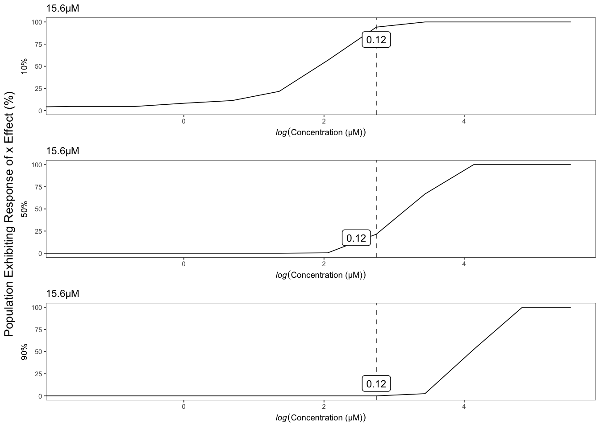
| Version | Author | Date |
|---|---|---|
| 7f8f7f0 | sam-widmayer | 2021-05-04 |
Triphenyl phosphate
Version out of date. Please update sommer to the newest version using:
install.packages('sommer') in a new session
Use the 'date.warning' argument to disable the warning message.iteration LogLik wall cpu(sec) restrained
1 -99.5088 20:16:27 0 0
2 -97.021 20:16:27 0 0
3 -92.6938 20:16:27 0 1
4 -91.5 20:16:27 0 1
5 -91.5 20:16:27 0 1
Version out of date. Please update sommer to the newest version using:
install.packages('sommer') in a new session
Use the 'date.warning' argument to disable the warning message.iteration LogLik wall cpu(sec) restrained
1 -101.227 20:16:34 0 0
2 -99.3862 20:16:34 0 0
3 -97.2599 20:16:34 0 0
4 -96.4427 20:16:34 0 0
5 -96.4408 20:16:34 0 0
6 -96.4408 20:16:34 0 0
Version out of date. Please update sommer to the newest version using:
install.packages('sommer') in a new session
Use the 'date.warning' argument to disable the warning message.iteration LogLik wall cpu(sec) restrained
1 -94.2974 20:16:41 0 0
2 -93.8133 20:16:41 0 0
3 -93.533 20:16:41 0 0
4 -93.4757 20:16:41 0 0
5 -93.4734 20:16:41 0 0
6 -93.4733 20:16:41 0 0
Version out of date. Please update sommer to the newest version using:
install.packages('sommer') in a new session
Use the 'date.warning' argument to disable the warning message.iteration LogLik wall cpu(sec) restrained
1 -90.2892 20:16:48 0 0
2 -90.1169 20:16:48 0 0
3 -90.0413 20:16:48 0 0
4 -90.0304 20:16:48 0 0
5 -90.0301 20:16:49 1 0
Version out of date. Please update sommer to the newest version using:
install.packages('sommer') in a new session
Use the 'date.warning' argument to disable the warning message.iteration LogLik wall cpu(sec) restrained
1 -71.0053 20:16:55 0 0
2 -70.6933 20:16:55 0 0
3 -70.6207 20:16:55 0 0
4 -70.6139 20:16:55 0 0
5 -70.6138 20:16:55 0 0
Version out of date. Please update sommer to the newest version using:
install.packages('sommer') in a new session
Use the 'date.warning' argument to disable the warning message.iteration LogLik wall cpu(sec) restrained
1 -48.9331 20:17:2 0 0
2 -47.3229 20:17:2 0 0
3 -47.0872 20:17:2 0 0
4 -47.071 20:17:2 0 0
5 -47.0709 20:17:2 0 0
Version out of date. Please update sommer to the newest version using:
install.packages('sommer') in a new session
Use the 'date.warning' argument to disable the warning message.iteration LogLik wall cpu(sec) restrained
1 -56.3588 20:17:9 0 0
2 -55.6586 20:17:9 0 0
3 -55.535 20:17:9 0 0
4 -55.5261 20:17:9 0 0
5 -55.526 20:17:9 0 0
Version out of date. Please update sommer to the newest version using:
install.packages('sommer') in a new session
Use the 'date.warning' argument to disable the warning message.iteration LogLik wall cpu(sec) restrained
1 -81.8364 20:17:16 0 0
2 -81.8241 20:17:16 0 0
3 -81.8191 20:17:16 0 0
4 -81.8183 20:17:16 0 0
Version out of date. Please update sommer to the newest version using:
install.packages('sommer') in a new session
Use the 'date.warning' argument to disable the warning message.iteration LogLik wall cpu(sec) restrained
1 -57.4567 20:17:23 0 0
2 -57.3221 20:17:23 0 0
3 -57.2849 20:17:23 0 0
4 -57.2809 20:17:23 0 0
5 -57.2808 20:17:23 0 0
Version out of date. Please update sommer to the newest version using:
install.packages('sommer') in a new session
Use the 'date.warning' argument to disable the warning message.iteration LogLik wall cpu(sec) restrained
1 -62.2402 20:17:30 0 0
2 -62.1683 20:17:30 0 0
3 -62.1478 20:17:31 1 0
4 -62.1456 20:17:31 1 0
5 -62.1455 20:17:31 1 0
Version out of date. Please update sommer to the newest version using:
install.packages('sommer') in a new session
Use the 'date.warning' argument to disable the warning message.iteration LogLik wall cpu(sec) restrained
1 -49.774 20:17:38 0 0
2 -49.6889 20:17:38 0 0
3 -49.6617 20:17:38 0 0
4 -49.658 20:17:38 0 0
5 -49.6579 20:17:38 0 0
[1] "Only 1 Strain Sampled in Bootstrap - Skipping"
[1] "Only 1 Strain Sampled in Bootstrap - Skipping"
Version out of date. Please update sommer to the newest version using:
install.packages('sommer') in a new session
Use the 'date.warning' argument to disable the warning message.iteration LogLik wall cpu(sec) restrained
1 -99.1255 20:17:44 0 0
2 -97.3465 20:17:44 0 0
3 -95.2997 20:17:44 0 0
4 -94.4171 20:17:44 0 0
5 -94.4161 20:17:44 0 0
6 -94.4161 20:17:44 0 0
| Version | Author | Date |
|---|---|---|
| a8afd8b | sam-widmayer | 2021-06-01 |
| 8529055 | sam-widmayer | 2021-04-19 |
| bc5c5b5 | sam-widmayer | 2021-04-09 |
| 19f2802 | sam-widmayer | 2021-03-29 |
| a41a855 | sam-widmayer | 2021-03-25 |
| 0280cf4 | sam-widmayer | 2021-03-24 |
| 0e83f2b | sam-widmayer | 2021-03-24 |
| a451b2a | sam-widmayer | 2021-03-17 |
| 4bcbcdd | sam-widmayer | 2021-03-14 |
| cb6e132 | sam-widmayer | 2021-03-06 |


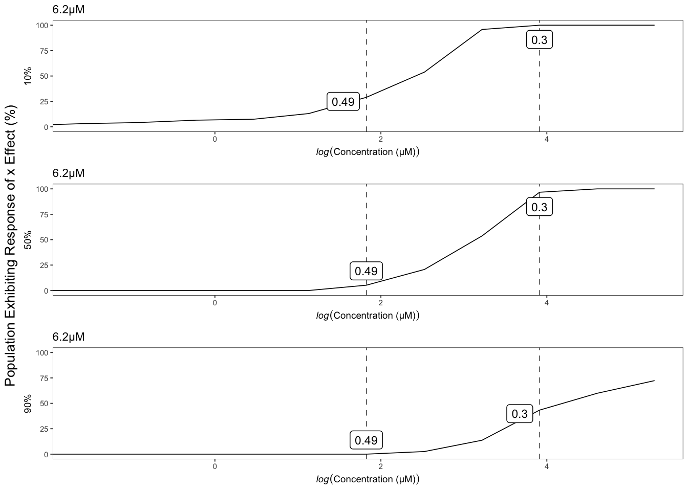
| Version | Author | Date |
|---|---|---|
| 7f8f7f0 | sam-widmayer | 2021-05-04 |
Arsenic trioxide
Version out of date. Please update sommer to the newest version using:
install.packages('sommer') in a new session
Use the 'date.warning' argument to disable the warning message.iteration LogLik wall cpu(sec) restrained
1 -147.328 20:17:55 0 0
2 -144.861 20:17:55 0 0
3 -140.577 20:17:55 0 1
4 -138 20:17:55 0 1
5 -138 20:17:55 0 1
Version out of date. Please update sommer to the newest version using:
install.packages('sommer') in a new session
Use the 'date.warning' argument to disable the warning message.iteration LogLik wall cpu(sec) restrained
1 -115.614 20:18:2 0 0
2 -115.469 20:18:2 0 0
3 -115.41 20:18:2 0 0
4 -115.403 20:18:2 0 0
5 -115.403 20:18:2 0 0
Version out of date. Please update sommer to the newest version using:
install.packages('sommer') in a new session
Use the 'date.warning' argument to disable the warning message.iteration LogLik wall cpu(sec) restrained
1 -115.151 20:18:9 0 0
2 -115.063 20:18:9 0 0
3 -115.031 20:18:9 0 0
4 -115.028 20:18:9 0 0
5 -115.028 20:18:9 0 0
Version out of date. Please update sommer to the newest version using:
install.packages('sommer') in a new session
Use the 'date.warning' argument to disable the warning message.iteration LogLik wall cpu(sec) restrained
1 -119.601 20:18:16 0 0
2 -119.281 20:18:16 0 0
3 -119.127 20:18:16 0 0
4 -119.104 20:18:16 0 0
5 -119.104 20:18:16 0 0
Version out of date. Please update sommer to the newest version using:
install.packages('sommer') in a new session
Use the 'date.warning' argument to disable the warning message.iteration LogLik wall cpu(sec) restrained
1 -128.86 20:18:23 0 0
2 -128.084 20:18:23 0 0
3 -127.578 20:18:23 0 0
4 -127.479 20:18:23 0 0
5 -127.477 20:18:23 0 0
6 -127.477 20:18:23 0 0
Version out of date. Please update sommer to the newest version using:
install.packages('sommer') in a new session
Use the 'date.warning' argument to disable the warning message.iteration LogLik wall cpu(sec) restrained
1 -121.874 20:18:30 0 0
2 -121.559 20:18:30 0 0
3 -121.408 20:18:30 0 0
4 -121.386 20:18:30 0 0
5 -121.385 20:18:30 0 0
Version out of date. Please update sommer to the newest version using:
install.packages('sommer') in a new session
Use the 'date.warning' argument to disable the warning message.iteration LogLik wall cpu(sec) restrained
1 -125.445 20:18:37 0 0
2 -124.777 20:18:37 0 0
3 -124.341 20:18:37 0 0
4 -124.238 20:18:37 0 0
5 -124.232 20:18:37 0 0
6 -124.232 20:18:37 0 0
Version out of date. Please update sommer to the newest version using:
install.packages('sommer') in a new session
Use the 'date.warning' argument to disable the warning message.iteration LogLik wall cpu(sec) restrained
1 -114.631 20:18:44 0 0
2 -114.204 20:18:44 0 0
3 -113.949 20:18:44 0 0
4 -113.886 20:18:44 0 0
5 -113.881 20:18:44 0 0
6 -113.88 20:18:44 0 0
Version out of date. Please update sommer to the newest version using:
install.packages('sommer') in a new session
Use the 'date.warning' argument to disable the warning message.iteration LogLik wall cpu(sec) restrained
1 -86.6924 20:18:51 0 0
2 -86.6845 20:18:51 0 0
3 -86.6816 20:18:51 0 0
4 -86.6812 20:18:51 0 0
Version out of date. Please update sommer to the newest version using:
install.packages('sommer') in a new session
Use the 'date.warning' argument to disable the warning message.iteration LogLik wall cpu(sec) restrained
1 -36.2775 20:18:58 0 0
2 -35.8902 20:18:58 0 0
3 -35.4758 20:18:58 0 0
4 -35.0624 20:18:58 0 0
5 -34.7063 20:18:58 0 1
6 -34.5 20:18:58 0 1
7 -34.5 20:18:58 0 1
[1] "Only 1 Strain Sampled in Bootstrap - Skipping"
[1] "Only 1 Strain Sampled in Bootstrap - Skipping"
[1] "Only 1 Strain Sampled in Bootstrap - Skipping"
[1] "Only 1 Strain Sampled in Bootstrap - Skipping"
[1] "Only 1 Strain Sampled in Bootstrap - Skipping"
[1] "Only 1 Strain Sampled in Bootstrap - Skipping"
[1] "Only 1 Strain Sampled in Bootstrap - Skipping"
[1] "Only 1 Strain Sampled in Bootstrap - Skipping"
[1] "Only 1 Strain Sampled in Bootstrap - Skipping"
[1] "Only 1 Strain Sampled in Bootstrap - Skipping"
[1] "Only 1 Strain Sampled in Bootstrap - Skipping"
[1] "Only 1 Strain Sampled in Bootstrap - Skipping"
[1] "Only 1 Strain Sampled in Bootstrap - Skipping"
[1] "Only 1 Strain Sampled in Bootstrap - Skipping"
[1] "Only 1 Strain Sampled in Bootstrap - Skipping"
[1] "Only 1 Strain Sampled in Bootstrap - Skipping"
[1] "Only 1 Strain Sampled in Bootstrap - Skipping"
[1] "Only 1 Strain Sampled in Bootstrap - Skipping"
[1] "Only 1 Strain Sampled in Bootstrap - Skipping"
[1] "Only 1 Strain Sampled in Bootstrap - Skipping"
[1] "Only 1 Strain Sampled in Bootstrap - Skipping"
[1] "Only 1 Strain Sampled in Bootstrap - Skipping"
[1] "Only 1 Strain Sampled in Bootstrap - Skipping"
[1] "Only 1 Strain Sampled in Bootstrap - Skipping"
[1] "Only 1 Strain Sampled in Bootstrap - Skipping"
[1] "Only 1 Strain Sampled in Bootstrap - Skipping"
[1] "Only 1 Strain Sampled in Bootstrap - Skipping"
[1] "Only 1 Strain Sampled in Bootstrap - Skipping"
[1] "Only 1 Strain Sampled in Bootstrap - Skipping"
[1] "Only 1 Strain Sampled in Bootstrap - Skipping"
[1] "Only 1 Strain Sampled in Bootstrap - Skipping"
[1] "Only 1 Strain Sampled in Bootstrap - Skipping"
[1] "Only 1 Strain Sampled in Bootstrap - Skipping"
[1] "Only 1 Strain Sampled in Bootstrap - Skipping"
[1] "Only 1 Strain Sampled in Bootstrap - Skipping"
| Version | Author | Date |
|---|---|---|
| a8afd8b | sam-widmayer | 2021-06-01 |
| 8529055 | sam-widmayer | 2021-04-19 |
| bc5c5b5 | sam-widmayer | 2021-04-09 |
| 19f2802 | sam-widmayer | 2021-03-29 |
| a41a855 | sam-widmayer | 2021-03-25 |
| 0280cf4 | sam-widmayer | 2021-03-24 |
| 0e83f2b | sam-widmayer | 2021-03-24 |
| a451b2a | sam-widmayer | 2021-03-17 |
| 4bcbcdd | sam-widmayer | 2021-03-14 |
| cb6e132 | sam-widmayer | 2021-03-06 |

| Version | Author | Date |
|---|---|---|
| 0280cf4 | sam-widmayer | 2021-03-24 |


| Version | Author | Date |
|---|---|---|
| 7f8f7f0 | sam-widmayer | 2021-05-04 |
Carbaryl
Version out of date. Please update sommer to the newest version using:
install.packages('sommer') in a new session
Use the 'date.warning' argument to disable the warning message.iteration LogLik wall cpu(sec) restrained
1 -146.815 20:19:10 0 0
2 -144.347 20:19:10 0 0
3 -140.064 20:19:10 0 1
4 -137.5 20:19:10 0 1
5 -137.5 20:19:11 1 1
Version out of date. Please update sommer to the newest version using:
install.packages('sommer') in a new session
Use the 'date.warning' argument to disable the warning message.iteration LogLik wall cpu(sec) restrained
1 -128.248 20:19:18 0 0
2 -127.652 20:19:18 0 0
3 -127.28 20:19:18 0 0
4 -127.197 20:19:18 0 0
5 -127.193 20:19:18 0 0
6 -127.193 20:19:18 0 0
Version out of date. Please update sommer to the newest version using:
install.packages('sommer') in a new session
Use the 'date.warning' argument to disable the warning message.iteration LogLik wall cpu(sec) restrained
1 -132.763 20:19:25 0 0
2 -132.322 20:19:25 0 0
3 -132.059 20:19:25 0 0
4 -131.996 20:19:25 0 0
5 -131.992 20:19:25 0 0
6 -131.992 20:19:25 0 0
Version out of date. Please update sommer to the newest version using:
install.packages('sommer') in a new session
Use the 'date.warning' argument to disable the warning message.iteration LogLik wall cpu(sec) restrained
1 -123.817 20:19:33 0 0
2 -123.746 20:19:33 0 0
3 -123.713 20:19:33 0 0
4 -123.707 20:19:33 0 0
5 -123.707 20:19:33 0 0
Version out of date. Please update sommer to the newest version using:
install.packages('sommer') in a new session
Use the 'date.warning' argument to disable the warning message.iteration LogLik wall cpu(sec) restrained
1 -106.799 20:19:40 0 0
2 -106.767 20:19:40 0 0
3 -106.758 20:19:41 1 0
4 -106.757 20:19:41 1 0
5 -106.757 20:19:41 1 0
Version out of date. Please update sommer to the newest version using:
install.packages('sommer') in a new session
Use the 'date.warning' argument to disable the warning message.iteration LogLik wall cpu(sec) restrained
1 -100.438 20:19:47 0 0
2 -100.199 20:19:48 1 0
3 -100.14 20:19:48 1 0
4 -100.135 20:19:48 1 0
5 -100.135 20:19:48 1 0
Version out of date. Please update sommer to the newest version using:
install.packages('sommer') in a new session
Use the 'date.warning' argument to disable the warning message.iteration LogLik wall cpu(sec) restrained
1 -91.1939 20:19:55 0 0
2 -90.9865 20:19:55 0 0
3 -90.9379 20:19:55 0 0
4 -90.9335 20:19:55 0 0
5 -90.9335 20:19:55 0 0
Version out of date. Please update sommer to the newest version using:
install.packages('sommer') in a new session
Use the 'date.warning' argument to disable the warning message.iteration LogLik wall cpu(sec) restrained
1 -102.42 20:20:2 0 0
2 -102.342 20:20:2 0 0
3 -102.321 20:20:2 0 0
4 -102.319 20:20:2 0 0
5 -102.319 20:20:2 0 0
Version out of date. Please update sommer to the newest version using:
install.packages('sommer') in a new session
Use the 'date.warning' argument to disable the warning message.iteration LogLik wall cpu(sec) restrained
1 -88.605 20:20:9 0 0
2 -88.1595 20:20:9 0 0
3 -88.0628 20:20:9 0 0
4 -88.0541 20:20:9 0 0
5 -88.054 20:20:9 0 0
Version out of date. Please update sommer to the newest version using:
install.packages('sommer') in a new session
Use the 'date.warning' argument to disable the warning message.iteration LogLik wall cpu(sec) restrained
1 -84.8058 20:20:16 0 0
2 -84.6912 20:20:16 0 0
3 -84.6613 20:20:16 0 0
4 -84.6584 20:20:17 1 0
5 -84.6584 20:20:17 1 0
Version out of date. Please update sommer to the newest version using:
install.packages('sommer') in a new session
Use the 'date.warning' argument to disable the warning message.iteration LogLik wall cpu(sec) restrained
1 -66.4345 20:20:24 0 0
2 -65.7401 20:20:24 0 0
3 -65.3059 20:20:24 0 0
4 -65.2261 20:20:24 0 0
5 -65.225 20:20:24 0 0
6 -65.225 20:20:24 0 0
Version out of date. Please update sommer to the newest version using:
install.packages('sommer') in a new session
Use the 'date.warning' argument to disable the warning message.iteration LogLik wall cpu(sec) restrained
1 -15.1471 20:20:31 0 0
2 -13.306 20:20:31 0 0
3 -12.7936 20:20:31 0 0
4 -12.7246 20:20:31 0 0
5 -12.7219 20:20:31 0 0
6 -12.7218 20:20:31 0 0
[1] "Only 1 Strain Sampled in Bootstrap - Skipping"
[1] "Only 1 Strain Sampled in Bootstrap - Skipping"
[1] "Only 1 Strain Sampled in Bootstrap - Skipping"
[1] "Only 1 Strain Sampled in Bootstrap - Skipping"
[1] "Only 1 Strain Sampled in Bootstrap - Skipping"
[1] "Only 1 Strain Sampled in Bootstrap - Skipping"
[1] "Only 1 Strain Sampled in Bootstrap - Skipping"
[1] "Only 1 Strain Sampled in Bootstrap - Skipping"
[1] "Only 1 Strain Sampled in Bootstrap - Skipping"
[1] "Only 1 Strain Sampled in Bootstrap - Skipping"
[1] "Only 1 Strain Sampled in Bootstrap - Skipping"
[1] "Only 1 Strain Sampled in Bootstrap - Skipping"
[1] "Only 1 Strain Sampled in Bootstrap - Skipping"
[1] "Only 1 Strain Sampled in Bootstrap - Skipping"
[1] "Only 1 Strain Sampled in Bootstrap - Skipping"
[1] "Only 1 Strain Sampled in Bootstrap - Skipping"
[1] "Only 1 Strain Sampled in Bootstrap - Skipping"
[1] "Only 1 Strain Sampled in Bootstrap - Skipping"
[1] "Only 1 Strain Sampled in Bootstrap - Skipping"
[1] "Only 1 Strain Sampled in Bootstrap - Skipping"
[1] "Only 1 Strain Sampled in Bootstrap - Skipping"
[1] "Only 1 Strain Sampled in Bootstrap - Skipping"
[1] "Only 1 Strain Sampled in Bootstrap - Skipping"
[1] "Only 1 Strain Sampled in Bootstrap - Skipping"
[1] "Only 1 Strain Sampled in Bootstrap - Skipping"
[1] "Only 1 Strain Sampled in Bootstrap - Skipping"
[1] "Only 1 Strain Sampled in Bootstrap - Skipping"
[1] "Only 1 Strain Sampled in Bootstrap - Skipping"
[1] "Only 1 Strain Sampled in Bootstrap - Skipping"
[1] "Only 1 Strain Sampled in Bootstrap - Skipping"
[1] "Only 1 Strain Sampled in Bootstrap - Skipping"
[1] "Only 1 Strain Sampled in Bootstrap - Skipping"
[1] "Only 1 Strain Sampled in Bootstrap - Skipping"
[1] "Only 1 Strain Sampled in Bootstrap - Skipping"
[1] "Only 1 Strain Sampled in Bootstrap - Skipping"
[1] "Only 1 Strain Sampled in Bootstrap - Skipping"
[1] "Only 1 Strain Sampled in Bootstrap - Skipping"
[1] "Only 1 Strain Sampled in Bootstrap - Skipping"
[1] "Only 1 Strain Sampled in Bootstrap - Skipping"
[1] "Only 1 Strain Sampled in Bootstrap - Skipping"
[1] "Only 1 Strain Sampled in Bootstrap - Skipping"
[1] "Only 1 Strain Sampled in Bootstrap - Skipping"
[1] "Only 1 Strain Sampled in Bootstrap - Skipping"
[1] "Only 1 Strain Sampled in Bootstrap - Skipping"
| Version | Author | Date |
|---|---|---|
| a8afd8b | sam-widmayer | 2021-06-01 |
| 8529055 | sam-widmayer | 2021-04-19 |
| bc5c5b5 | sam-widmayer | 2021-04-09 |
| 19f2802 | sam-widmayer | 2021-03-29 |
| a41a855 | sam-widmayer | 2021-03-25 |
| 0280cf4 | sam-widmayer | 2021-03-24 |
| 0e83f2b | sam-widmayer | 2021-03-24 |
| a451b2a | sam-widmayer | 2021-03-17 |
| 4bcbcdd | sam-widmayer | 2021-03-14 |
| cb6e132 | sam-widmayer | 2021-03-06 |

| Version | Author | Date |
|---|---|---|
| 0280cf4 | sam-widmayer | 2021-03-24 |


| Version | Author | Date |
|---|---|---|
| 7f8f7f0 | sam-widmayer | 2021-05-04 |
Carboxin
Version out of date. Please update sommer to the newest version using:
install.packages('sommer') in a new session
Use the 'date.warning' argument to disable the warning message.iteration LogLik wall cpu(sec) restrained
1 -137.587 20:20:40 0 0
2 -135.116 20:20:40 0 0
3 -130.828 20:20:41 1 1
4 -128.5 20:20:41 1 1
5 -128.5 20:20:41 1 1
Version out of date. Please update sommer to the newest version using:
install.packages('sommer') in a new session
Use the 'date.warning' argument to disable the warning message.iteration LogLik wall cpu(sec) restrained
1 -136.125 20:20:47 0 0
2 -134.832 20:20:47 0 0
3 -133.714 20:20:48 1 0
4 -133.419 20:20:48 1 0
5 -133.415 20:20:48 1 0
6 -133.415 20:20:48 1 0
Version out of date. Please update sommer to the newest version using:
install.packages('sommer') in a new session
Use the 'date.warning' argument to disable the warning message.iteration LogLik wall cpu(sec) restrained
1 -129.298 20:20:55 0 0
2 -127.966 20:20:55 0 0
3 -126.859 20:20:55 0 0
4 -126.64 20:20:55 0 0
5 -126.64 20:20:55 0 0
Version out of date. Please update sommer to the newest version using:
install.packages('sommer') in a new session
Use the 'date.warning' argument to disable the warning message.iteration LogLik wall cpu(sec) restrained
1 -114.828 20:21:3 0 0
2 -114.816 20:21:3 0 0
3 -114.812 20:21:3 0 0
4 -114.812 20:21:3 0 0
Version out of date. Please update sommer to the newest version using:
install.packages('sommer') in a new session
Use the 'date.warning' argument to disable the warning message.iteration LogLik wall cpu(sec) restrained
1 -103.232 20:21:10 0 0
2 -102.855 20:21:10 0 0
3 -102.757 20:21:10 0 0
4 -102.746 20:21:10 0 0
5 -102.745 20:21:10 0 0
Version out of date. Please update sommer to the newest version using:
install.packages('sommer') in a new session
Use the 'date.warning' argument to disable the warning message.iteration LogLik wall cpu(sec) restrained
1 -106.553 20:21:18 0 0
2 -105.722 20:21:18 0 0
3 -105.127 20:21:18 0 0
4 -104.974 20:21:18 0 0
5 -104.967 20:21:18 0 0
6 -104.967 20:21:18 0 0
Version out of date. Please update sommer to the newest version using:
install.packages('sommer') in a new session
Use the 'date.warning' argument to disable the warning message.iteration LogLik wall cpu(sec) restrained
1 -129.767 20:21:25 0 0
2 -128.584 20:21:25 0 0
3 -127.622 20:21:25 0 0
4 -127.392 20:21:25 0 0
5 -127.389 20:21:26 1 0
6 -127.389 20:21:26 1 0
Version out of date. Please update sommer to the newest version using:
install.packages('sommer') in a new session
Use the 'date.warning' argument to disable the warning message.iteration LogLik wall cpu(sec) restrained
1 -119.262 20:21:33 0 0
2 -119.011 20:21:33 0 0
3 -118.891 20:21:33 0 0
4 -118.872 20:21:33 0 0
5 -118.871 20:21:33 0 0
Version out of date. Please update sommer to the newest version using:
install.packages('sommer') in a new session
Use the 'date.warning' argument to disable the warning message.iteration LogLik wall cpu(sec) restrained
1 -97.2989 20:21:41 0 0
2 -96.8772 20:21:41 0 0
3 -96.7571 20:21:41 0 0
4 -96.7414 20:21:41 0 0
5 -96.7409 20:21:41 0 0
Version out of date. Please update sommer to the newest version using:
install.packages('sommer') in a new session
Use the 'date.warning' argument to disable the warning message.iteration LogLik wall cpu(sec) restrained
1 -90.8248 20:21:48 0 0
2 -90.1053 20:21:48 0 0
3 -89.9251 20:21:48 0 0
4 -89.9042 20:21:48 0 0
5 -89.9037 20:21:48 0 0
Version out of date. Please update sommer to the newest version using:
install.packages('sommer') in a new session
Use the 'date.warning' argument to disable the warning message.iteration LogLik wall cpu(sec) restrained
1 -98.4711 20:21:55 0 0
2 -98.4527 20:21:55 0 0
3 -98.4449 20:21:55 0 0
4 -98.4436 20:21:55 0 0
5 -98.4435 20:21:55 0 0
Version out of date. Please update sommer to the newest version using:
install.packages('sommer') in a new session
Use the 'date.warning' argument to disable the warning message.iteration LogLik wall cpu(sec) restrained
1 -97.6142 20:22:2 0 0
2 -97.1029 20:22:2 0 0
3 -96.7671 20:22:2 0 0
4 -96.6716 20:22:2 0 0
5 -96.6632 20:22:2 0 0
6 -96.6625 20:22:2 0 0
| Version | Author | Date |
|---|---|---|
| a8afd8b | sam-widmayer | 2021-06-01 |
| 8529055 | sam-widmayer | 2021-04-19 |
| bc5c5b5 | sam-widmayer | 2021-04-09 |
| 19f2802 | sam-widmayer | 2021-03-29 |
| a41a855 | sam-widmayer | 2021-03-25 |
| 0280cf4 | sam-widmayer | 2021-03-24 |
| 0e83f2b | sam-widmayer | 2021-03-24 |
| a451b2a | sam-widmayer | 2021-03-17 |
| 4bcbcdd | sam-widmayer | 2021-03-14 |
| cb6e132 | sam-widmayer | 2021-03-06 |

| Version | Author | Date |
|---|---|---|
| 0280cf4 | sam-widmayer | 2021-03-24 |

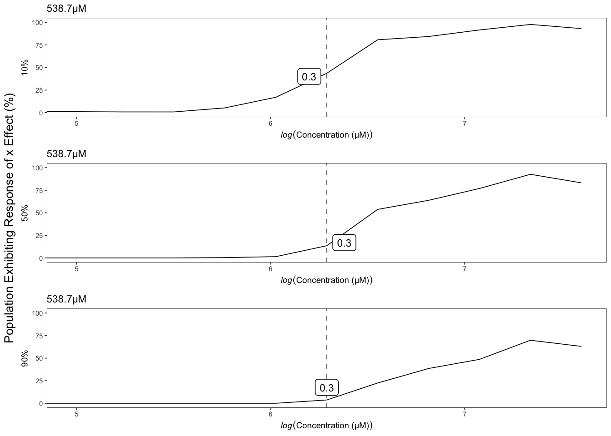
| Version | Author | Date |
|---|---|---|
| 7f8f7f0 | sam-widmayer | 2021-05-04 |
Chlorpyrifos
[1] "Excluding toxin17A: No Response"Version out of date. Please update sommer to the newest version using:
install.packages('sommer') in a new session
Use the 'date.warning' argument to disable the warning message.iteration LogLik wall cpu(sec) restrained
1 -110.882 20:22:13 0 0
2 -108.401 20:22:13 0 0
3 -104.089 20:22:13 0 1
4 -102.5 20:22:13 0 1
5 -102.5 20:22:13 0 1
Version out of date. Please update sommer to the newest version using:
install.packages('sommer') in a new session
Use the 'date.warning' argument to disable the warning message.iteration LogLik wall cpu(sec) restrained
1 -85.0517 20:22:20 0 0
2 -85.0206 20:22:20 0 0
3 -85.0098 20:22:20 0 0
4 -85.0086 20:22:20 0 0
5 -85.0086 20:22:20 0 0
Version out of date. Please update sommer to the newest version using:
install.packages('sommer') in a new session
Use the 'date.warning' argument to disable the warning message.iteration LogLik wall cpu(sec) restrained
1 -81.0478 20:22:27 0 0
2 -81.0213 20:22:27 0 0
3 -81.0133 20:22:27 0 0
4 -81.0124 20:22:27 0 0
Version out of date. Please update sommer to the newest version using:
install.packages('sommer') in a new session
Use the 'date.warning' argument to disable the warning message.iteration LogLik wall cpu(sec) restrained
1 -77.835 20:22:34 0 0
2 -77.7313 20:22:34 0 0
3 -77.7042 20:22:34 0 0
4 -77.7015 20:22:34 0 0
5 -77.7015 20:22:34 0 0
Version out of date. Please update sommer to the newest version using:
install.packages('sommer') in a new session
Use the 'date.warning' argument to disable the warning message.iteration LogLik wall cpu(sec) restrained
1 -72.6289 20:22:41 0 0
2 -72.4247 20:22:41 0 0
3 -72.3741 20:22:41 0 0
4 -72.3692 20:22:41 0 0
5 -72.3691 20:22:41 0 0
Version out of date. Please update sommer to the newest version using:
install.packages('sommer') in a new session
Use the 'date.warning' argument to disable the warning message.iteration LogLik wall cpu(sec) restrained
1 -78.2883 20:22:48 0 0
2 -78.2025 20:22:48 0 0
3 -78.18 20:22:48 0 0
4 -78.1778 20:22:48 0 0
5 -78.1778 20:22:48 0 0
Version out of date. Please update sommer to the newest version using:
install.packages('sommer') in a new session
Use the 'date.warning' argument to disable the warning message.iteration LogLik wall cpu(sec) restrained
1 -71.3274 20:22:55 0 0
2 -71.0089 20:22:55 0 0
3 -70.9358 20:22:55 0 0
4 -70.9291 20:22:55 0 0
5 -70.929 20:22:55 0 0
Version out of date. Please update sommer to the newest version using:
install.packages('sommer') in a new session
Use the 'date.warning' argument to disable the warning message.iteration LogLik wall cpu(sec) restrained
1 -82.3752 20:23:3 0 0
2 -82.2558 20:23:3 0 0
3 -82.2231 20:23:3 0 0
4 -82.2196 20:23:3 0 0
5 -82.2196 20:23:3 0 0
Version out of date. Please update sommer to the newest version using:
install.packages('sommer') in a new session
Use the 'date.warning' argument to disable the warning message.iteration LogLik wall cpu(sec) restrained
1 -69.5285 20:23:10 0 0
2 -69.2055 20:23:10 0 0
3 -69.1267 20:23:10 0 0
4 -69.1189 20:23:10 0 0
5 -69.1187 20:23:10 0 0
Version out of date. Please update sommer to the newest version using:
install.packages('sommer') in a new session
Use the 'date.warning' argument to disable the warning message.iteration LogLik wall cpu(sec) restrained
1 -76.8586 20:23:18 0 0
2 -76.7862 20:23:18 0 0
3 -76.7674 20:23:18 0 0
4 -76.7657 20:23:18 0 0
5 -76.7656 20:23:18 0 0
Version out of date. Please update sommer to the newest version using:
install.packages('sommer') in a new session
Use the 'date.warning' argument to disable the warning message.iteration LogLik wall cpu(sec) restrained
1 -53.8881 20:23:25 0 0
2 -53.2382 20:23:25 0 0
3 -53.0841 20:23:25 0 0
4 -53.0679 20:23:25 0 0
5 -53.0676 20:23:25 0 0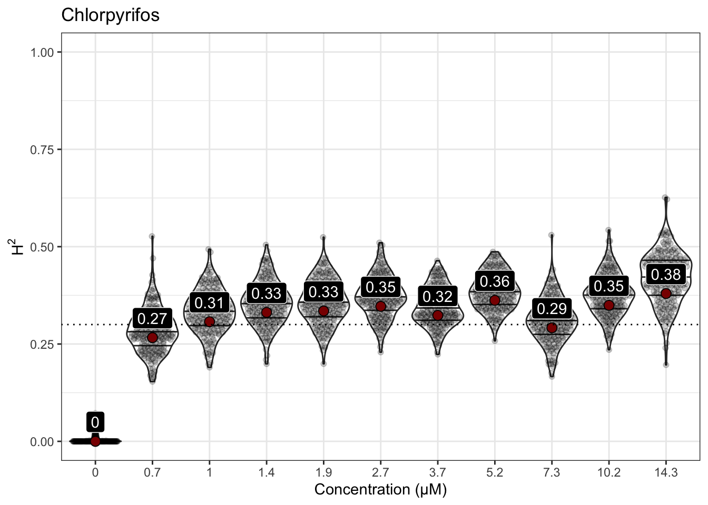
| Version | Author | Date |
|---|---|---|
| a8afd8b | sam-widmayer | 2021-06-01 |
| 8529055 | sam-widmayer | 2021-04-19 |
| bc5c5b5 | sam-widmayer | 2021-04-09 |
| 19f2802 | sam-widmayer | 2021-03-29 |
| a41a855 | sam-widmayer | 2021-03-25 |
| 0280cf4 | sam-widmayer | 2021-03-24 |
| 0e83f2b | sam-widmayer | 2021-03-24 |
| a451b2a | sam-widmayer | 2021-03-17 |
| 4bcbcdd | sam-widmayer | 2021-03-14 |
| cb6e132 | sam-widmayer | 2021-03-06 |

| Version | Author | Date |
|---|---|---|
| 0280cf4 | sam-widmayer | 2021-03-24 |


| Version | Author | Date |
|---|---|---|
| 7f8f7f0 | sam-widmayer | 2021-05-04 |
Lead (II) nitrate
Version out of date. Please update sommer to the newest version using:
install.packages('sommer') in a new session
Use the 'date.warning' argument to disable the warning message.iteration LogLik wall cpu(sec) restrained
1 -137.08 20:23:36 0 0
2 -134.609 20:23:36 0 0
3 -130.319 20:23:36 0 1
4 -128 20:23:36 0 1
5 -128 20:23:36 0 1
Version out of date. Please update sommer to the newest version using:
install.packages('sommer') in a new session
Use the 'date.warning' argument to disable the warning message.iteration LogLik wall cpu(sec) restrained
1 -82.4632 20:23:43 0 0
2 -82.3491 20:23:43 0 0
3 -82.3216 20:23:43 0 0
4 -82.3192 20:23:43 0 0
5 -82.3192 20:23:43 0 0
Version out of date. Please update sommer to the newest version using:
install.packages('sommer') in a new session
Use the 'date.warning' argument to disable the warning message.iteration LogLik wall cpu(sec) restrained
1 -85.0933 20:23:50 0 0
2 -85.0319 20:23:50 0 0
3 -85.0166 20:23:50 0 0
4 -85.0153 20:23:50 0 0
5 -85.0153 20:23:51 1 0
Version out of date. Please update sommer to the newest version using:
install.packages('sommer') in a new session
Use the 'date.warning' argument to disable the warning message.iteration LogLik wall cpu(sec) restrained
1 -93.1302 20:23:57 0 0
2 -93.1179 20:23:57 0 0
3 -93.1144 20:23:57 0 0
4 -93.1141 20:23:57 0 0
Version out of date. Please update sommer to the newest version using:
install.packages('sommer') in a new session
Use the 'date.warning' argument to disable the warning message.iteration LogLik wall cpu(sec) restrained
1 -105.834 20:24:4 0 0
2 -105.747 20:24:5 1 0
3 -105.714 20:24:5 1 0
4 -105.711 20:24:5 1 0
5 -105.711 20:24:5 1 0
Version out of date. Please update sommer to the newest version using:
install.packages('sommer') in a new session
Use the 'date.warning' argument to disable the warning message.iteration LogLik wall cpu(sec) restrained
1 -109.743 20:24:12 0 0
2 -109.448 20:24:12 0 0
3 -109.313 20:24:12 0 0
4 -109.296 20:24:12 0 0
5 -109.295 20:24:12 0 0
Version out of date. Please update sommer to the newest version using:
install.packages('sommer') in a new session
Use the 'date.warning' argument to disable the warning message.iteration LogLik wall cpu(sec) restrained
1 -108.702 20:24:19 0 0
2 -108.585 20:24:19 0 0
3 -108.534 20:24:19 0 0
4 -108.526 20:24:19 0 0
5 -108.526 20:24:19 0 0
Version out of date. Please update sommer to the newest version using:
install.packages('sommer') in a new session
Use the 'date.warning' argument to disable the warning message.iteration LogLik wall cpu(sec) restrained
1 -120.167 20:24:26 0 0
2 -118.96 20:24:26 0 0
3 -117.993 20:24:26 0 0
4 -117.778 20:24:26 0 0
5 -117.775 20:24:26 0 0
6 -117.775 20:24:26 0 0
Version out of date. Please update sommer to the newest version using:
install.packages('sommer') in a new session
Use the 'date.warning' argument to disable the warning message.iteration LogLik wall cpu(sec) restrained
1 -79.6568 20:24:33 0 0
2 -78.9345 20:24:33 0 0
3 -78.5546 20:24:33 0 0
4 -78.5209 20:24:33 0 0
5 -78.5208 20:24:33 0 0
Version out of date. Please update sommer to the newest version using:
install.packages('sommer') in a new session
Use the 'date.warning' argument to disable the warning message.iteration LogLik wall cpu(sec) restrained
1 -73.9162 20:24:40 0 0
2 -73.7735 20:24:40 0 0
3 -73.739 20:24:40 0 0
4 -73.7359 20:24:40 0 0
5 -73.7359 20:24:40 0 0
Version out of date. Please update sommer to the newest version using:
install.packages('sommer') in a new session
Use the 'date.warning' argument to disable the warning message.iteration LogLik wall cpu(sec) restrained
1 -74.7312 20:24:47 0 0
2 -74.7257 20:24:47 0 0
3 -74.7241 20:24:47 0 0
4 -74.724 20:24:47 0 0
| Version | Author | Date |
|---|---|---|
| a8afd8b | sam-widmayer | 2021-06-01 |
| 8529055 | sam-widmayer | 2021-04-19 |
| bc5c5b5 | sam-widmayer | 2021-04-09 |
| 19f2802 | sam-widmayer | 2021-03-29 |
| a41a855 | sam-widmayer | 2021-03-25 |
| 0280cf4 | sam-widmayer | 2021-03-24 |
| 0e83f2b | sam-widmayer | 2021-03-24 |
| a451b2a | sam-widmayer | 2021-03-17 |
| 4bcbcdd | sam-widmayer | 2021-03-14 |
| cb6e132 | sam-widmayer | 2021-03-06 |
| Version | Author | Date |
|---|---|---|
| 0280cf4 | sam-widmayer | 2021-03-24 |


| Version | Author | Date |
|---|---|---|
| 7f8f7f0 | sam-widmayer | 2021-05-04 |
Atrazine
Version out of date. Please update sommer to the newest version using:
install.packages('sommer') in a new session
Use the 'date.warning' argument to disable the warning message.iteration LogLik wall cpu(sec) restrained
1 -143.23 20:24:58 0 0
2 -140.761 20:24:58 0 0
3 -136.475 20:24:58 0 1
4 -134 20:24:58 0 1
5 -134 20:24:58 0 1
Version out of date. Please update sommer to the newest version using:
install.packages('sommer') in a new session
Use the 'date.warning' argument to disable the warning message.iteration LogLik wall cpu(sec) restrained
1 -137.218 20:25:6 0 0
2 -135.216 20:25:6 0 0
3 -132.641 20:25:6 0 0
4 -131.115 20:25:6 0 1
5 -131 20:25:6 0 1
6 -131 20:25:6 0 1
Version out of date. Please update sommer to the newest version using:
install.packages('sommer') in a new session
Use the 'date.warning' argument to disable the warning message.iteration LogLik wall cpu(sec) restrained
1 -135.464 20:25:13 0 0
2 -134.09 20:25:13 0 0
3 -132.84 20:25:13 0 0
4 -132.455 20:25:13 0 0
5 -132.44 20:25:13 0 0
6 -132.439 20:25:13 0 0
Version out of date. Please update sommer to the newest version using:
install.packages('sommer') in a new session
Use the 'date.warning' argument to disable the warning message.iteration LogLik wall cpu(sec) restrained
1 -142.362 20:25:21 0 0
2 -140.516 20:25:21 0 0
3 -138.369 20:25:21 0 0
4 -137.431 20:25:21 0 0
5 -137.391 20:25:21 0 0
6 -137.387 20:25:21 0 0
7 -137.386 20:25:21 0 0
Version out of date. Please update sommer to the newest version using:
install.packages('sommer') in a new session
Use the 'date.warning' argument to disable the warning message.iteration LogLik wall cpu(sec) restrained
1 -137.476 20:25:29 0 0
2 -135.766 20:25:29 0 0
3 -133.906 20:25:29 0 0
4 -133.162 20:25:29 0 0
5 -133.13 20:25:29 0 0
6 -133.128 20:25:29 0 0
7 -133.128 20:25:29 0 0
Version out of date. Please update sommer to the newest version using:
install.packages('sommer') in a new session
Use the 'date.warning' argument to disable the warning message.iteration LogLik wall cpu(sec) restrained
1 -141.007 20:25:36 0 0
2 -139.009 20:25:36 0 0
3 -136.42 20:25:36 0 0
4 -135.004 20:25:36 0 0
5 -134.989 20:25:36 0 0
6 -134.989 20:25:36 0 0
Version out of date. Please update sommer to the newest version using:
install.packages('sommer') in a new session
Use the 'date.warning' argument to disable the warning message.iteration LogLik wall cpu(sec) restrained
1 -139.68 20:25:43 0 0
2 -137.546 20:25:43 0 0
3 -134.439 20:25:44 1 1
4 -132 20:25:44 1 1
5 -132 20:25:44 1 1
Version out of date. Please update sommer to the newest version using:
install.packages('sommer') in a new session
Use the 'date.warning' argument to disable the warning message.iteration LogLik wall cpu(sec) restrained
1 -131.944 20:25:50 0 0
2 -130.645 20:25:51 1 0
3 -129.459 20:25:51 1 0
4 -129.046 20:25:51 1 0
5 -129.02 20:25:51 1 0
6 -129.019 20:25:51 1 0
7 -129.019 20:25:51 1 0
Version out of date. Please update sommer to the newest version using:
install.packages('sommer') in a new session
Use the 'date.warning' argument to disable the warning message.iteration LogLik wall cpu(sec) restrained
1 -137.864 20:25:58 0 0
2 -136.022 20:25:58 0 0
3 -133.677 20:25:58 0 0
4 -131.781 20:25:58 0 1
5 -131.5 20:25:58 0 1
6 -131.5 20:25:58 0 1
Version out of date. Please update sommer to the newest version using:
install.packages('sommer') in a new session
Use the 'date.warning' argument to disable the warning message.iteration LogLik wall cpu(sec) restrained
1 -115.354 20:26:5 0 0
2 -114.746 20:26:5 0 0
3 -114.372 20:26:5 0 0
4 -114.297 20:26:5 0 0
5 -114.295 20:26:5 0 0
6 -114.295 20:26:5 0 0
Version out of date. Please update sommer to the newest version using:
install.packages('sommer') in a new session
Use the 'date.warning' argument to disable the warning message.iteration LogLik wall cpu(sec) restrained
1 -118.889 20:26:12 0 0
2 -118.477 20:26:12 0 0
3 -118.225 20:26:12 0 0
4 -118.159 20:26:12 0 0
5 -118.153 20:26:13 1 0
6 -118.153 20:26:13 1 0
Version out of date. Please update sommer to the newest version using:
install.packages('sommer') in a new session
Use the 'date.warning' argument to disable the warning message.iteration LogLik wall cpu(sec) restrained
1 -116.397 20:26:19 0 0
2 -115.778 20:26:19 0 0
3 -115.414 20:26:20 1 0
4 -115.352 20:26:20 1 0
5 -115.351 20:26:20 1 0
| Version | Author | Date |
|---|---|---|
| a8afd8b | sam-widmayer | 2021-06-01 |
| 8529055 | sam-widmayer | 2021-04-19 |
| bc5c5b5 | sam-widmayer | 2021-04-09 |
| 19f2802 | sam-widmayer | 2021-03-29 |
| a41a855 | sam-widmayer | 2021-03-25 |
| 0280cf4 | sam-widmayer | 2021-03-24 |
| 0e83f2b | sam-widmayer | 2021-03-24 |
| a451b2a | sam-widmayer | 2021-03-17 |
| 4bcbcdd | sam-widmayer | 2021-03-14 |
| cb6e132 | sam-widmayer | 2021-03-06 |

| Version | Author | Date |
|---|---|---|
| 0280cf4 | sam-widmayer | 2021-03-24 |


| Version | Author | Date |
|---|---|---|
| 7f8f7f0 | sam-widmayer | 2021-05-04 |
2,4-D
Version out of date. Please update sommer to the newest version using:
install.packages('sommer') in a new session
Use the 'date.warning' argument to disable the warning message.iteration LogLik wall cpu(sec) restrained
1 -183.55 20:26:30 0 0
2 -181.091 20:26:30 0 0
3 -176.822 20:26:30 0 1
4 -173.5 20:26:30 0 1
5 -173.5 20:26:31 1 1
Version out of date. Please update sommer to the newest version using:
install.packages('sommer') in a new session
Use the 'date.warning' argument to disable the warning message.iteration LogLik wall cpu(sec) restrained
1 -161.929 20:26:38 0 0
2 -161.219 20:26:38 0 0
3 -160.775 20:26:38 0 0
4 -160.692 20:26:38 0 0
5 -160.69 20:26:38 0 0
6 -160.69 20:26:38 0 0
Version out of date. Please update sommer to the newest version using:
install.packages('sommer') in a new session
Use the 'date.warning' argument to disable the warning message.iteration LogLik wall cpu(sec) restrained
1 -172.822 20:26:45 0 0
2 -171.182 20:26:45 0 0
3 -169.519 20:26:45 0 0
4 -169.041 20:26:46 1 0
5 -169.04 20:26:46 1 0
6 -169.04 20:26:46 1 0
Version out of date. Please update sommer to the newest version using:
install.packages('sommer') in a new session
Use the 'date.warning' argument to disable the warning message.iteration LogLik wall cpu(sec) restrained
1 -172.792 20:26:53 0 0
2 -171.456 20:26:53 0 0
3 -170.301 20:26:53 0 0
4 -170.023 20:26:53 0 0
5 -170.02 20:26:53 0 0
6 -170.02 20:26:53 0 0
Version out of date. Please update sommer to the newest version using:
install.packages('sommer') in a new session
Use the 'date.warning' argument to disable the warning message.iteration LogLik wall cpu(sec) restrained
1 -160.27 20:27:1 0 0
2 -159.464 20:27:2 1 0
3 -158.943 20:27:2 1 0
4 -158.851 20:27:2 1 0
5 -158.851 20:27:2 1 0
Version out of date. Please update sommer to the newest version using:
install.packages('sommer') in a new session
Use the 'date.warning' argument to disable the warning message.iteration LogLik wall cpu(sec) restrained
1 -169.254 20:27:9 0 0
2 -168.106 20:27:9 0 0
3 -167.229 20:27:9 0 0
4 -167.065 20:27:9 0 0
5 -167.064 20:27:9 0 0
Version out of date. Please update sommer to the newest version using:
install.packages('sommer') in a new session
Use the 'date.warning' argument to disable the warning message.iteration LogLik wall cpu(sec) restrained
1 -172.273 20:27:16 0 0
2 -170.977 20:27:17 1 0
3 -169.909 20:27:17 1 0
4 -169.692 20:27:17 1 0
5 -169.691 20:27:17 1 0
Version out of date. Please update sommer to the newest version using:
install.packages('sommer') in a new session
Use the 'date.warning' argument to disable the warning message.iteration LogLik wall cpu(sec) restrained
1 -167.504 20:27:25 0 0
2 -166.563 20:27:25 0 0
3 -165.924 20:27:25 0 0
4 -165.816 20:27:25 0 0
5 -165.816 20:27:25 0 0
Version out of date. Please update sommer to the newest version using:
install.packages('sommer') in a new session
Use the 'date.warning' argument to disable the warning message.iteration LogLik wall cpu(sec) restrained
1 -154.646 20:27:32 0 0
2 -154.181 20:27:33 1 0
3 -153.937 20:27:33 1 0
4 -153.902 20:27:33 1 0
5 -153.901 20:27:33 1 0
Version out of date. Please update sommer to the newest version using:
install.packages('sommer') in a new session
Use the 'date.warning' argument to disable the warning message.iteration LogLik wall cpu(sec) restrained
1 -162.936 20:27:40 0 0
2 -162.233 20:27:40 0 0
3 -161.822 20:27:41 1 0
4 -161.764 20:27:41 1 0
5 -161.763 20:27:41 1 0
Version out of date. Please update sommer to the newest version using:
install.packages('sommer') in a new session
Use the 'date.warning' argument to disable the warning message.iteration LogLik wall cpu(sec) restrained
1 -155.825 20:27:48 0 0
2 -155.268 20:27:48 0 0
3 -154.968 20:27:48 0 0
4 -154.927 20:27:48 0 0
5 -154.927 20:27:48 0 0
Version out of date. Please update sommer to the newest version using:
install.packages('sommer') in a new session
Use the 'date.warning' argument to disable the warning message.iteration LogLik wall cpu(sec) restrained
1 -145.483 20:27:56 1 0
2 -145.165 20:27:56 1 0
3 -145.014 20:27:56 1 0
4 -144.993 20:27:56 1 0
5 -144.993 20:27:56 1 0
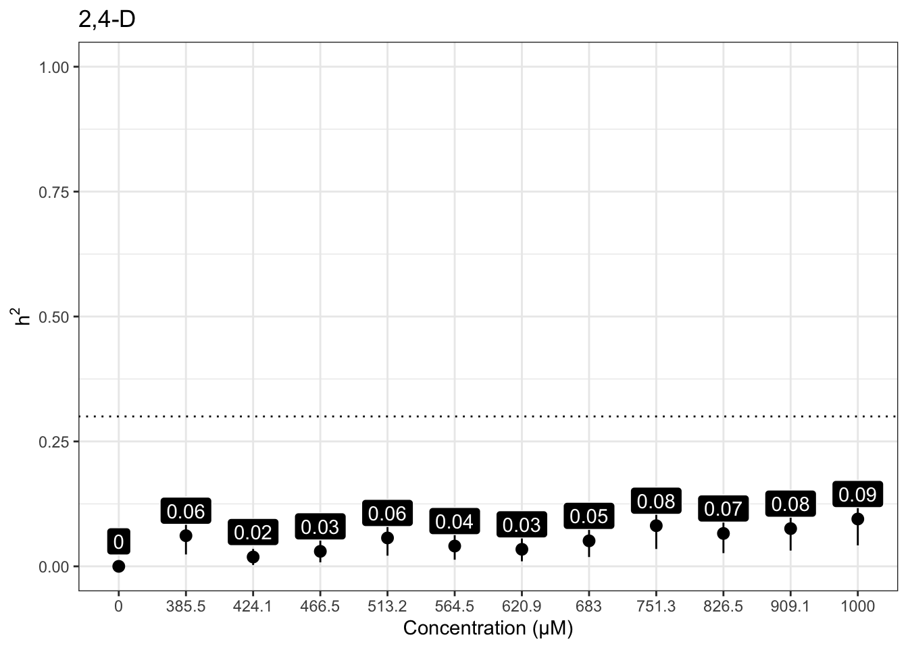


| Version | Author | Date |
|---|---|---|
| 7f8f7f0 | sam-widmayer | 2021-05-04 |
Malathion
Version out of date. Please update sommer to the newest version using:
install.packages('sommer') in a new session
Use the 'date.warning' argument to disable the warning message.iteration LogLik wall cpu(sec) restrained
1 -137.574 20:28:6 0 0
2 -135.104 20:28:6 0 0
3 -130.815 20:28:6 0 1
4 -128.5 20:28:6 0 1
5 -128.5 20:28:6 0 1
Version out of date. Please update sommer to the newest version using:
install.packages('sommer') in a new session
Use the 'date.warning' argument to disable the warning message.iteration LogLik wall cpu(sec) restrained
1 -102.324 20:28:13 0 0
2 -102.252 20:28:13 0 0
3 -102.226 20:28:13 0 0
4 -102.224 20:28:13 0 0
5 -102.224 20:28:13 0 0
Version out of date. Please update sommer to the newest version using:
install.packages('sommer') in a new session
Use the 'date.warning' argument to disable the warning message.iteration LogLik wall cpu(sec) restrained
1 -106.997 20:28:21 1 0
2 -106.775 20:28:21 1 0
3 -106.68 20:28:21 1 0
4 -106.669 20:28:21 1 0
5 -106.669 20:28:21 1 0
Version out of date. Please update sommer to the newest version using:
install.packages('sommer') in a new session
Use the 'date.warning' argument to disable the warning message.iteration LogLik wall cpu(sec) restrained
1 -90.7289 20:28:28 0 0
2 -90.7286 20:28:28 0 0
3 -90.7285 20:28:28 0 0
4 -90.7285 20:28:28 0 0
Version out of date. Please update sommer to the newest version using:
install.packages('sommer') in a new session
Use the 'date.warning' argument to disable the warning message.iteration LogLik wall cpu(sec) restrained
1 -80.0759 20:28:35 0 0
2 -80.0631 20:28:35 0 0
3 -80.0599 20:28:35 0 0
4 -80.0597 20:28:35 0 0
Version out of date. Please update sommer to the newest version using:
install.packages('sommer') in a new session
Use the 'date.warning' argument to disable the warning message.iteration LogLik wall cpu(sec) restrained
1 -74.2368 20:28:42 0 0
2 -73.9627 20:28:42 0 0
3 -73.8976 20:28:42 0 0
4 -73.8913 20:28:42 0 0
5 -73.8912 20:28:42 0 0
Version out of date. Please update sommer to the newest version using:
install.packages('sommer') in a new session
Use the 'date.warning' argument to disable the warning message.iteration LogLik wall cpu(sec) restrained
1 -80.0017 20:28:48 0 0
2 -79.9721 20:28:48 0 0
3 -79.963 20:28:48 0 0
4 -79.9619 20:28:48 0 0
5 -79.9619 20:28:48 0 0
Version out of date. Please update sommer to the newest version using:
install.packages('sommer') in a new session
Use the 'date.warning' argument to disable the warning message.iteration LogLik wall cpu(sec) restrained
1 -93.0578 20:28:55 0 0
2 -92.9918 20:28:55 0 0
3 -92.9676 20:28:55 0 0
4 -92.9649 20:28:55 0 0
5 -92.9649 20:28:55 0 0
Version out of date. Please update sommer to the newest version using:
install.packages('sommer') in a new session
Use the 'date.warning' argument to disable the warning message.iteration LogLik wall cpu(sec) restrained
1 -90.4617 20:29:2 0 0
2 -90.3998 20:29:2 0 0
3 -90.3776 20:29:2 0 0
4 -90.3753 20:29:2 0 0
5 -90.3753 20:29:2 0 0
Version out of date. Please update sommer to the newest version using:
install.packages('sommer') in a new session
Use the 'date.warning' argument to disable the warning message.iteration LogLik wall cpu(sec) restrained
1 -82.3008 20:29:9 0 0
2 -82.2164 20:29:9 0 0
3 -82.1924 20:29:9 0 0
4 -82.1897 20:29:9 0 0
5 -82.1896 20:29:9 0 0
Version out of date. Please update sommer to the newest version using:
install.packages('sommer') in a new session
Use the 'date.warning' argument to disable the warning message.iteration LogLik wall cpu(sec) restrained
1 -110.542 20:29:16 0 0
2 -110.201 20:29:16 0 0
3 -110.048 20:29:16 0 0
4 -110.031 20:29:16 0 0
5 -110.031 20:29:16 0 0
Version out of date. Please update sommer to the newest version using:
install.packages('sommer') in a new session
Use the 'date.warning' argument to disable the warning message.iteration LogLik wall cpu(sec) restrained
1 -96.2604 20:29:23 0 0
2 -96.2588 20:29:23 0 0
3 -96.2583 20:29:23 0 0
4 -96.2582 20:29:23 0 0


| Version | Author | Date |
|---|---|---|
| 7f8f7f0 | sam-widmayer | 2021-05-04 |
Chlorothalonil
Version out of date. Please update sommer to the newest version using:
install.packages('sommer') in a new session
Use the 'date.warning' argument to disable the warning message.iteration LogLik wall cpu(sec) restrained
1 -133.463 20:29:33 0 0
2 -130.993 20:29:33 0 0
3 -126.702 20:29:33 0 1
4 -124.5 20:29:33 0 1
5 -124.5 20:29:34 1 1
Version out of date. Please update sommer to the newest version using:
install.packages('sommer') in a new session
Use the 'date.warning' argument to disable the warning message.iteration LogLik wall cpu(sec) restrained
1 -125.349 20:29:41 0 0
2 -123.958 20:29:41 0 0
3 -122.628 20:29:41 0 0
4 -122.098 20:29:41 0 0
5 -122.039 20:29:41 0 0
6 -122.031 20:29:41 0 0
7 -122.03 20:29:41 0 0
8 -122.029 20:29:41 0 0
Version out of date. Please update sommer to the newest version using:
install.packages('sommer') in a new session
Use the 'date.warning' argument to disable the warning message.iteration LogLik wall cpu(sec) restrained
1 -130.875 20:29:48 0 0
2 -128.865 20:29:48 0 0
3 -126.107 20:29:48 0 1
4 -124 20:29:48 0 1
5 -124 20:29:48 0 1
Version out of date. Please update sommer to the newest version using:
install.packages('sommer') in a new session
Use the 'date.warning' argument to disable the warning message.iteration LogLik wall cpu(sec) restrained
1 -129.634 20:29:54 0 0
2 -127.846 20:29:54 0 0
3 -125.767 20:29:54 0 0
4 -124.67 20:29:55 1 0
5 -124.536 20:29:55 1 0
6 -124.509 20:29:55 1 0
7 -124.503 20:29:55 1 0
8 -124.501 20:29:55 1 0
9 -124.5 20:29:55 1 0
Version out of date. Please update sommer to the newest version using:
install.packages('sommer') in a new session
Use the 'date.warning' argument to disable the warning message.iteration LogLik wall cpu(sec) restrained
1 -126.732 20:30:1 0 0
2 -125.709 20:30:1 0 0
3 -124.848 20:30:1 0 0
4 -124.5 20:30:1 0 0
5 -124.439 20:30:2 1 0
6 -124.424 20:30:2 1 0
7 -124.421 20:30:2 1 0
8 -124.42 20:30:2 1 0
9 -124.419 20:30:2 1 0
Version out of date. Please update sommer to the newest version using:
install.packages('sommer') in a new session
Use the 'date.warning' argument to disable the warning message.iteration LogLik wall cpu(sec) restrained
1 -132.656 20:30:8 0 0
2 -130.857 20:30:8 0 0
3 -128.637 20:30:8 0 0
4 -126.889 20:30:9 1 1
5 -126.5 20:30:9 1 1
6 -126.5 20:30:9 1 1
Version out of date. Please update sommer to the newest version using:
install.packages('sommer') in a new session
Use the 'date.warning' argument to disable the warning message.iteration LogLik wall cpu(sec) restrained
1 -128.606 20:30:15 0 0
2 -127.479 20:30:15 0 0
3 -126.471 20:30:15 0 0
4 -126.017 20:30:16 1 0
5 -125.916 20:30:16 1 0
6 -125.885 20:30:16 1 0
7 -125.874 20:30:16 1 0
8 -125.869 20:30:16 1 0
9 -125.867 20:30:16 1 0
10 -125.866 20:30:16 1 0
Version out of date. Please update sommer to the newest version using:
install.packages('sommer') in a new session
Use the 'date.warning' argument to disable the warning message.iteration LogLik wall cpu(sec) restrained
1 -127.32 20:30:23 1 0
2 -126.026 20:30:23 1 0
3 -124.795 20:30:23 1 0
4 -124.231 20:30:23 1 0
5 -124.127 20:30:23 1 0
6 -124.104 20:30:23 1 0
7 -124.098 20:30:23 1 0
8 -124.096 20:30:23 1 0
9 -124.096 20:30:23 1 0
Version out of date. Please update sommer to the newest version using:
install.packages('sommer') in a new session
Use the 'date.warning' argument to disable the warning message.iteration LogLik wall cpu(sec) restrained
1 -117.353 20:30:30 0 0
2 -116.969 20:30:30 0 0
3 -116.766 20:30:30 0 0
4 -116.73 20:30:30 0 0
5 -116.729 20:30:30 0 0
Version out of date. Please update sommer to the newest version using:
install.packages('sommer') in a new session
Use the 'date.warning' argument to disable the warning message.iteration LogLik wall cpu(sec) restrained
1 -110.679 20:30:37 0 0
2 -110.59 20:30:37 0 0
3 -110.552 20:30:37 0 0
4 -110.546 20:30:37 0 0
5 -110.545 20:30:37 0 0
Version out of date. Please update sommer to the newest version using:
install.packages('sommer') in a new session
Use the 'date.warning' argument to disable the warning message.iteration LogLik wall cpu(sec) restrained
1 -114.265 20:30:44 0 0
2 -113.762 20:30:44 0 0
3 -113.499 20:30:44 0 0
4 -113.463 20:30:44 0 0
5 -113.463 20:30:44 0 0
Version out of date. Please update sommer to the newest version using:
install.packages('sommer') in a new session
Use the 'date.warning' argument to disable the warning message.iteration LogLik wall cpu(sec) restrained
1 -108.516 20:30:51 0 0
2 -108.26 20:30:51 0 0
3 -108.142 20:30:51 0 0
4 -108.124 20:30:51 0 0
5 -108.124 20:30:51 0 0


| Version | Author | Date |
|---|---|---|
| 7f8f7f0 | sam-widmayer | 2021-05-04 |
Deltamethrin
Version out of date. Please update sommer to the newest version using:
install.packages('sommer') in a new session
Use the 'date.warning' argument to disable the warning message.iteration LogLik wall cpu(sec) restrained
1 -81.2846 20:31:1 0 0
2 -78.8009 20:31:1 0 0
3 -74.4877 20:31:1 0 1
4 -74 20:31:2 1 1
5 -74 20:31:2 1 1
Version out of date. Please update sommer to the newest version using:
install.packages('sommer') in a new session
Use the 'date.warning' argument to disable the warning message.iteration LogLik wall cpu(sec) restrained
1 -78.8261 20:31:8 0 0
2 -77.8974 20:31:8 0 0
3 -77.1475 20:31:8 0 0
4 -76.8811 20:31:8 0 0
5 -76.8503 20:31:8 0 0
6 -76.8462 20:31:8 0 0
7 -76.8456 20:31:8 0 0
Version out of date. Please update sommer to the newest version using:
install.packages('sommer') in a new session
Use the 'date.warning' argument to disable the warning message.iteration LogLik wall cpu(sec) restrained
1 -64.2773 20:31:15 0 0
2 -64.1917 20:31:15 0 0
3 -64.1593 20:31:15 0 0
4 -64.1555 20:31:15 0 0
5 -64.1554 20:31:15 0 0
Version out of date. Please update sommer to the newest version using:
install.packages('sommer') in a new session
Use the 'date.warning' argument to disable the warning message.iteration LogLik wall cpu(sec) restrained
1 -70.7388 20:31:22 0 0
2 -70.454 20:31:22 0 0
3 -70.3096 20:31:22 0 0
4 -70.284 20:31:22 0 0
5 -70.2832 20:31:22 0 0
Version out of date. Please update sommer to the newest version using:
install.packages('sommer') in a new session
Use the 'date.warning' argument to disable the warning message.iteration LogLik wall cpu(sec) restrained
1 -60.3983 20:31:29 0 0
2 -60.3784 20:31:29 0 0
3 -60.3725 20:31:29 0 0
4 -60.3721 20:31:29 0 0
Version out of date. Please update sommer to the newest version using:
install.packages('sommer') in a new session
Use the 'date.warning' argument to disable the warning message.iteration LogLik wall cpu(sec) restrained
1 -62.3759 20:31:36 0 0
2 -62.3632 20:31:36 0 0
3 -62.3588 20:31:36 0 0
4 -62.3583 20:31:36 0 0
Version out of date. Please update sommer to the newest version using:
install.packages('sommer') in a new session
Use the 'date.warning' argument to disable the warning message.iteration LogLik wall cpu(sec) restrained
1 -69.975 20:31:43 0 0
2 -69.7616 20:31:43 0 0
3 -69.6676 20:31:43 0 0
4 -69.6548 20:31:43 0 0
5 -69.6545 20:31:43 0 0
Version out of date. Please update sommer to the newest version using:
install.packages('sommer') in a new session
Use the 'date.warning' argument to disable the warning message.iteration LogLik wall cpu(sec) restrained
1 -64.6935 20:31:50 0 0
2 -64.6059 20:31:50 0 0
3 -64.5742 20:31:50 0 0
4 -64.571 20:31:50 0 0
5 -64.571 20:31:50 0 0
Version out of date. Please update sommer to the newest version using:
install.packages('sommer') in a new session
Use the 'date.warning' argument to disable the warning message.iteration LogLik wall cpu(sec) restrained
1 -70.371 20:31:57 0 0
2 -69.7407 20:31:57 0 0
3 -69.4128 20:31:57 0 0
4 -69.376 20:31:57 0 0
5 -69.376 20:31:57 0 0
Version out of date. Please update sommer to the newest version using:
install.packages('sommer') in a new session
Use the 'date.warning' argument to disable the warning message.iteration LogLik wall cpu(sec) restrained
1 -63.4138 20:32:4 0 0
2 -63.4073 20:32:4 0 0
3 -63.4046 20:32:4 0 0
4 -63.4042 20:32:4 0 0
Version out of date. Please update sommer to the newest version using:
install.packages('sommer') in a new session
Use the 'date.warning' argument to disable the warning message.iteration LogLik wall cpu(sec) restrained
1 -61.6273 20:32:10 0 0
2 -61.5789 20:32:10 0 0
3 -61.5607 20:32:10 0 0
4 -61.5585 20:32:10 0 0
5 -61.5584 20:32:10 0 0
Version out of date. Please update sommer to the newest version using:
install.packages('sommer') in a new session
Use the 'date.warning' argument to disable the warning message.iteration LogLik wall cpu(sec) restrained
1 -48.183 20:32:17 0 0
2 -48.1444 20:32:17 0 0
3 -48.1333 20:32:17 0 0
4 -48.1321 20:32:17 0 0
5 -48.1321 20:32:17 0 0


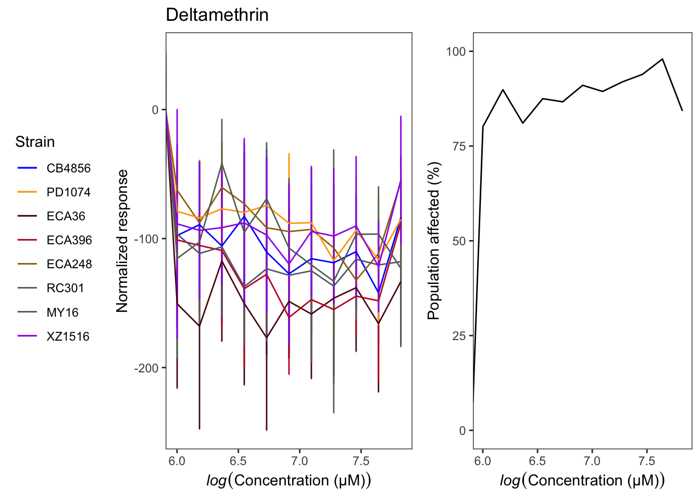
Manganese dichloride
Version out of date. Please update sommer to the newest version using:
install.packages('sommer') in a new session
Use the 'date.warning' argument to disable the warning message.iteration LogLik wall cpu(sec) restrained
1 -88.6113 20:32:27 0 0
2 -86.1249 20:32:27 0 0
3 -81.8012 20:32:27 0 1
4 -81 20:32:27 0 1
5 -81 20:32:27 0 1
Version out of date. Please update sommer to the newest version using:
install.packages('sommer') in a new session
Use the 'date.warning' argument to disable the warning message.iteration LogLik wall cpu(sec) restrained
1 -80.7935 20:32:34 0 0
2 -79.8754 20:32:34 0 0
3 -79.2817 20:32:34 0 0
4 -79.188 20:32:34 0 0
5 -79.1873 20:32:34 0 0
Version out of date. Please update sommer to the newest version using:
install.packages('sommer') in a new session
Use the 'date.warning' argument to disable the warning message.iteration LogLik wall cpu(sec) restrained
1 -73.9375 20:32:41 0 0
2 -73.7829 20:32:41 0 0
3 -73.7085 20:32:41 0 0
4 -73.6947 20:32:41 0 0
5 -73.6942 20:32:41 0 0
Version out of date. Please update sommer to the newest version using:
install.packages('sommer') in a new session
Use the 'date.warning' argument to disable the warning message.iteration LogLik wall cpu(sec) restrained
1 -68.2248 20:32:48 0 0
2 -68.1886 20:32:48 0 0
3 -68.1746 20:32:48 0 0
4 -68.1726 20:32:48 0 0
5 -68.1725 20:32:48 0 0
Version out of date. Please update sommer to the newest version using:
install.packages('sommer') in a new session
Use the 'date.warning' argument to disable the warning message.iteration LogLik wall cpu(sec) restrained
1 -65.6024 20:32:55 0 0
2 -65.5582 20:32:55 0 0
3 -65.5428 20:32:55 0 0
4 -65.5413 20:32:55 0 0
5 -65.5412 20:32:55 0 0
Version out of date. Please update sommer to the newest version using:
install.packages('sommer') in a new session
Use the 'date.warning' argument to disable the warning message.iteration LogLik wall cpu(sec) restrained
1 -79.1214 20:33:2 0 0
2 -78.8319 20:33:2 0 0
3 -78.6416 20:33:2 0 0
4 -78.5773 20:33:2 0 0
5 -78.5684 20:33:2 0 0
6 -78.5671 20:33:2 0 0
7 -78.567 20:33:2 0 0
Version out of date. Please update sommer to the newest version using:
install.packages('sommer') in a new session
Use the 'date.warning' argument to disable the warning message.iteration LogLik wall cpu(sec) restrained
1 -73.483 20:33:9 0 0
2 -72.9293 20:33:9 0 0
3 -72.6702 20:33:9 0 0
4 -72.6476 20:33:9 0 0
5 -72.6476 20:33:9 0 0
Version out of date. Please update sommer to the newest version using:
install.packages('sommer') in a new session
Use the 'date.warning' argument to disable the warning message.iteration LogLik wall cpu(sec) restrained
1 -73.769 20:33:16 0 0
2 -73.3781 20:33:16 0 0
3 -73.187 20:33:16 0 0
4 -73.1617 20:33:16 0 0
5 -73.1615 20:33:16 0 0
Version out of date. Please update sommer to the newest version using:
install.packages('sommer') in a new session
Use the 'date.warning' argument to disable the warning message.iteration LogLik wall cpu(sec) restrained
1 -70.178 20:33:22 0 0
2 -70.1027 20:33:22 0 0
3 -70.0632 20:33:23 1 0
4 -70.0533 20:33:23 1 0
5 -70.0524 20:33:23 1 0
Version out of date. Please update sommer to the newest version using:
install.packages('sommer') in a new session
Use the 'date.warning' argument to disable the warning message.iteration LogLik wall cpu(sec) restrained
1 -63.9853 20:33:29 0 0
2 -63.2972 20:33:29 0 0
3 -63.0696 20:33:29 0 0
4 -63.0329 20:33:29 0 0
5 -63.0311 20:33:29 0 0
6 -63.031 20:33:29 0 0
Version out of date. Please update sommer to the newest version using:
install.packages('sommer') in a new session
Use the 'date.warning' argument to disable the warning message.iteration LogLik wall cpu(sec) restrained
1 -53.3278 20:33:36 0 0
2 -51.9111 20:33:36 0 0
3 -51.5138 20:33:36 0 0
4 -51.4598 20:33:36 0 0
5 -51.4576 20:33:36 0 0
6 -51.4575 20:33:36 0 0
Version out of date. Please update sommer to the newest version using:
install.packages('sommer') in a new session
Use the 'date.warning' argument to disable the warning message.iteration LogLik wall cpu(sec) restrained
1 -44.4103 20:33:43 0 0
2 -43.4106 20:33:43 0 0
3 -43.2129 20:33:43 0 0
4 -43.1952 20:33:43 0 0
5 -43.1949 20:33:43 0 0


Propoxur
Version out of date. Please update sommer to the newest version using:
install.packages('sommer') in a new session
Use the 'date.warning' argument to disable the warning message.iteration LogLik wall cpu(sec) restrained
1 -139.621 20:33:53 0 0
2 -137.152 20:33:53 0 0
3 -132.864 20:33:53 0 1
4 -130.5 20:33:53 0 1
5 -130.5 20:33:53 0 1
Version out of date. Please update sommer to the newest version using:
install.packages('sommer') in a new session
Use the 'date.warning' argument to disable the warning message.iteration LogLik wall cpu(sec) restrained
1 -122.021 20:34:0 0 0
2 -121.638 20:34:0 0 0
3 -121.42 20:34:0 0 0
4 -121.372 20:34:0 0 0
5 -121.369 20:34:0 0 0
6 -121.369 20:34:0 0 0
Version out of date. Please update sommer to the newest version using:
install.packages('sommer') in a new session
Use the 'date.warning' argument to disable the warning message.iteration LogLik wall cpu(sec) restrained
1 -124.018 20:34:7 0 0
2 -123.529 20:34:7 0 0
3 -123.234 20:34:7 0 0
4 -123.166 20:34:7 0 0
5 -123.163 20:34:7 0 0
6 -123.163 20:34:7 0 0
Version out of date. Please update sommer to the newest version using:
install.packages('sommer') in a new session
Use the 'date.warning' argument to disable the warning message.iteration LogLik wall cpu(sec) restrained
1 -126.377 20:34:14 0 0
2 -125.983 20:34:14 0 0
3 -125.759 20:34:15 1 0
4 -125.71 20:34:15 1 0
5 -125.707 20:34:15 1 0
6 -125.707 20:34:15 1 0
Version out of date. Please update sommer to the newest version using:
install.packages('sommer') in a new session
Use the 'date.warning' argument to disable the warning message.iteration LogLik wall cpu(sec) restrained
1 -133.842 20:34:21 0 0
2 -132.661 20:34:21 0 0
3 -131.533 20:34:21 0 0
4 -130.949 20:34:22 1 0
5 -130.808 20:34:22 1 0
6 -130.768 20:34:22 1 0
7 -130.756 20:34:22 1 0
8 -130.752 20:34:22 1 0
9 -130.75 20:34:22 1 0
10 -130.75 20:34:22 1 0
Version out of date. Please update sommer to the newest version using:
install.packages('sommer') in a new session
Use the 'date.warning' argument to disable the warning message.iteration LogLik wall cpu(sec) restrained
1 -117.039 20:34:29 0 0
2 -117.039 20:34:29 0 0
3 -117.039 20:34:29 0 0
4 -117.039 20:34:29 0 0
Version out of date. Please update sommer to the newest version using:
install.packages('sommer') in a new session
Use the 'date.warning' argument to disable the warning message.iteration LogLik wall cpu(sec) restrained
1 -100.865 20:34:35 0 0
2 -100.752 20:34:35 0 0
3 -100.69 20:34:35 0 0
4 -100.672 20:34:35 0 0
5 -100.671 20:34:35 0 0
6 -100.67 20:34:35 0 0
Version out of date. Please update sommer to the newest version using:
install.packages('sommer') in a new session
Use the 'date.warning' argument to disable the warning message.iteration LogLik wall cpu(sec) restrained
1 -94.4048 20:34:42 0 0
2 -94.3984 20:34:42 0 0
3 -94.3952 20:34:42 0 0
4 -94.3943 20:34:42 0 0
Version out of date. Please update sommer to the newest version using:
install.packages('sommer') in a new session
Use the 'date.warning' argument to disable the warning message.iteration LogLik wall cpu(sec) restrained
1 -104 20:34:49 0 0
2 -103.923 20:34:49 0 0
3 -103.882 20:34:49 0 0
4 -103.871 20:34:49 0 0
5 -103.87 20:34:49 0 0
6 -103.87 20:34:49 0 0
Version out of date. Please update sommer to the newest version using:
install.packages('sommer') in a new session
Use the 'date.warning' argument to disable the warning message.iteration LogLik wall cpu(sec) restrained
1 -93.2886 20:34:56 0 0
2 -93.0186 20:34:56 0 0
3 -92.9224 20:34:56 0 0
4 -92.9059 20:34:56 0 0
5 -92.905 20:34:56 0 0
Version out of date. Please update sommer to the newest version using:
install.packages('sommer') in a new session
Use the 'date.warning' argument to disable the warning message.iteration LogLik wall cpu(sec) restrained
1 -119.985 20:35:3 0 0
2 -119.963 20:35:3 0 0
3 -119.952 20:35:3 0 0
4 -119.95 20:35:3 0 0
5 -119.95 20:35:3 0 0
Version out of date. Please update sommer to the newest version using:
install.packages('sommer') in a new session
Use the 'date.warning' argument to disable the warning message.iteration LogLik wall cpu(sec) restrained
1 -82.3607 20:35:10 0 0
2 -81.6575 20:35:10 0 0
3 -81.2623 20:35:10 0 0
4 -81.2129 20:35:10 0 0
5 -81.2128 20:35:10 0 0


Mancozeb
Version out of date. Please update sommer to the newest version using:
install.packages('sommer') in a new session
Use the 'date.warning' argument to disable the warning message.iteration LogLik wall cpu(sec) restrained
1 -144.251 20:35:20 0 0
2 -141.782 20:35:20 0 0
3 -137.497 20:35:20 0 1
4 -135 20:35:20 0 1
5 -135 20:35:20 0 1
Version out of date. Please update sommer to the newest version using:
install.packages('sommer') in a new session
Use the 'date.warning' argument to disable the warning message.iteration LogLik wall cpu(sec) restrained
1 -127.375 20:35:27 0 0
2 -126.669 20:35:27 0 0
3 -126.235 20:35:27 0 0
4 -126.158 20:35:27 0 0
5 -126.156 20:35:27 0 0
6 -126.156 20:35:27 0 0
Version out of date. Please update sommer to the newest version using:
install.packages('sommer') in a new session
Use the 'date.warning' argument to disable the warning message.iteration LogLik wall cpu(sec) restrained
1 -128.815 20:35:35 0 0
2 -128.285 20:35:35 0 0
3 -127.983 20:35:35 0 0
4 -127.93 20:35:35 0 0
5 -127.929 20:35:35 0 0
6 -127.929 20:35:35 0 0
Version out of date. Please update sommer to the newest version using:
install.packages('sommer') in a new session
Use the 'date.warning' argument to disable the warning message.iteration LogLik wall cpu(sec) restrained
1 -135.759 20:35:42 0 0
2 -134.71 20:35:42 0 0
3 -133.862 20:35:42 0 0
4 -133.595 20:35:43 1 0
5 -133.573 20:35:43 1 0
6 -133.571 20:35:43 1 0
7 -133.571 20:35:43 1 0
Version out of date. Please update sommer to the newest version using:
install.packages('sommer') in a new session
Use the 'date.warning' argument to disable the warning message.iteration LogLik wall cpu(sec) restrained
1 -123.836 20:35:49 0 0
2 -123.547 20:35:50 1 0
3 -123.411 20:35:50 1 0
4 -123.392 20:35:50 1 0
5 -123.392 20:35:50 1 0
Version out of date. Please update sommer to the newest version using:
install.packages('sommer') in a new session
Use the 'date.warning' argument to disable the warning message.iteration LogLik wall cpu(sec) restrained
1 -115.236 20:35:57 0 0
2 -115.222 20:35:57 0 0
3 -115.217 20:35:57 0 0
4 -115.217 20:35:57 0 0
Version out of date. Please update sommer to the newest version using:
install.packages('sommer') in a new session
Use the 'date.warning' argument to disable the warning message.iteration LogLik wall cpu(sec) restrained
1 -120.512 20:36:4 0 0
2 -120.296 20:36:4 0 0
3 -120.203 20:36:4 0 0
4 -120.192 20:36:4 0 0
5 -120.192 20:36:4 0 0
Version out of date. Please update sommer to the newest version using:
install.packages('sommer') in a new session
Use the 'date.warning' argument to disable the warning message.iteration LogLik wall cpu(sec) restrained
1 -122.121 20:36:11 1 0
2 -121.8 20:36:11 1 0
3 -121.647 20:36:11 1 0
4 -121.625 20:36:11 1 0
5 -121.625 20:36:11 1 0
Version out of date. Please update sommer to the newest version using:
install.packages('sommer') in a new session
Use the 'date.warning' argument to disable the warning message.iteration LogLik wall cpu(sec) restrained
1 -133.854 20:36:17 0 0
2 -133.175 20:36:17 0 0
3 -132.725 20:36:17 0 0
4 -132.617 20:36:17 0 0
5 -132.611 20:36:18 1 0
6 -132.611 20:36:18 1 0
Version out of date. Please update sommer to the newest version using:
install.packages('sommer') in a new session
Use the 'date.warning' argument to disable the warning message.iteration LogLik wall cpu(sec) restrained
1 -129.733 20:36:24 0 0
2 -128.977 20:36:24 0 0
3 -128.512 20:36:24 0 0
4 -128.438 20:36:24 0 0
5 -128.437 20:36:25 1 0
Version out of date. Please update sommer to the newest version using:
install.packages('sommer') in a new session
Use the 'date.warning' argument to disable the warning message.iteration LogLik wall cpu(sec) restrained
1 -130.192 20:36:31 0 0
2 -129.353 20:36:32 1 0
3 -128.791 20:36:32 1 0
4 -128.679 20:36:32 1 0
5 -128.677 20:36:32 1 0
6 -128.677 20:36:32 1 0
Version out of date. Please update sommer to the newest version using:
install.packages('sommer') in a new session
Use the 'date.warning' argument to disable the warning message.iteration LogLik wall cpu(sec) restrained
1 -135.114 20:36:38 0 0
2 -133.833 20:36:39 1 0
3 -132.693 20:36:39 1 0
4 -132.318 20:36:39 1 0
5 -132.296 20:36:39 1 0
6 -132.294 20:36:39 1 0
7 -132.294 20:36:39 1 0


sessionInfo()R version 4.0.4 (2021-02-15)
Platform: x86_64-apple-darwin17.0 (64-bit)
Running under: macOS Catalina 10.15.7
Matrix products: default
BLAS: /Library/Frameworks/R.framework/Versions/4.0/Resources/lib/libRblas.dylib
LAPACK: /Library/Frameworks/R.framework/Versions/4.0/Resources/lib/libRlapack.dylib
locale:
[1] en_US.UTF-8/en_US.UTF-8/en_US.UTF-8/C/en_US.UTF-8/en_US.UTF-8
attached base packages:
[1] stats graphics grDevices utils datasets methods base
other attached packages:
[1] beepr_1.3 RColorBrewer_1.1-2 sommer_4.1.3
[4] crayon_1.4.1 lattice_0.20-44 Matrix_1.3-4
[7] ggrepel_0.9.1 ggbeeswarm_0.6.0 nationalparkcolors_0.1.0
[10] ddpcr_1.15 kableExtra_1.3.4 knitr_1.33
[13] drc_3.0-1 MASS_7.3-54 easyXpress_0.1.0
[16] forcats_0.5.1 stringr_1.4.0 dplyr_1.0.7
[19] purrr_0.3.4 readr_1.4.0 tidyr_1.1.3
[22] tibble_3.1.2 ggplot2_3.3.5 tidyverse_1.3.1
[25] workflowr_1.6.2
loaded via a namespace (and not attached):
[1] minqa_1.2.4 TH.data_1.0-10 colorspace_2.0-2
[4] ellipsis_0.3.2 rio_0.5.27 rprojroot_2.0.2
[7] fs_1.5.0 rstudioapi_0.13 farver_2.1.0
[10] audio_0.1-7 fansi_0.5.0 mvtnorm_1.1-2
[13] lubridate_1.7.10 xml2_1.3.2 codetools_0.2-18
[16] splines_4.0.4 readbitmap_0.1.5 jsonlite_1.7.2
[19] nloptr_1.2.2.2 broom_0.7.8 dbplyr_2.1.1
[22] png_0.1-7 compiler_4.0.4 httr_1.4.2
[25] backports_1.2.1 assertthat_0.2.1 bmp_0.3
[28] cli_3.0.0 later_1.2.0 htmltools_0.5.1.1
[31] tools_4.0.4 igraph_1.2.6 gtable_0.3.0
[34] glue_1.4.2 rebus.base_0.0-3 Rcpp_1.0.6
[37] carData_3.0-4 cellranger_1.1.0 jquerylib_0.1.4
[40] vctrs_0.3.8 nlme_3.1-152 svglite_2.0.0
[43] xfun_0.24 rebus.datetimes_0.0-1 lme4_1.1-27.1
[46] openxlsx_4.2.4 rvest_1.0.0 lifecycle_1.0.0
[49] rebus.numbers_0.0-1 gtools_3.9.2 zoo_1.8-9
[52] scales_1.1.1 hms_1.1.0 promises_1.2.0.1
[55] sandwich_3.0-1 yaml_2.2.1 curl_4.3.2
[58] sass_0.4.0 stringi_1.6.2 imager_0.42.10
[61] highr_0.9 plotrix_3.8-1 tiff_0.1-8
[64] boot_1.3-28 zip_2.2.0 rlang_0.4.11
[67] pkgconfig_2.0.3 systemfonts_1.0.2 evaluate_0.14
[70] labeling_0.4.2 cowplot_1.1.1 tidyselect_1.1.1
[73] magrittr_2.0.1 R6_2.5.0 generics_0.1.0
[76] multcomp_1.4-17 DBI_1.1.1 pillar_1.6.1
[79] haven_2.4.1 whisker_0.4 foreign_0.8-81
[82] withr_2.4.2 rebus_0.1-3 survival_3.2-11
[85] abind_1.4-5 rebus.unicode_0.0-2 modelr_0.1.8
[88] car_3.0-11 utf8_1.2.1 rmarkdown_2.9
[91] jpeg_0.1-8.1 grid_4.0.4 readxl_1.3.1
[94] data.table_1.14.0 git2r_0.28.0 reprex_2.0.0
[97] digest_0.6.27 webshot_0.5.2 httpuv_1.6.1
[100] munsell_0.5.0 beeswarm_0.4.0 viridisLite_0.4.0
[103] vipor_0.4.5 bslib_0.2.5.1